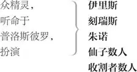

普洛斯彼罗 ，合法的米兰公爵
米兰达 ，普洛斯彼罗之女
阿隆佐 ，那不勒斯国王
西巴斯辛 ，阿隆佐之弟
安东尼奥 ，普洛斯彼罗之弟，篡位的米兰公爵
腓迪南 ，那不勒斯国王之子
贡柴罗 ，忠诚的老枢密大臣
阿德里安 和弗兰西斯科 ，两贵族
特林鸠罗 ，弄臣
斯丹法诺 ，酗酒的司膳官
船长
水手长
众水手
凯列班 ，未驯化的畸形奴隶
爱丽儿 ，空气精灵

场景：无人的荒岛
海中一船
雷电交加，暴风雨声可闻。船长与水手长上
船长 水手长！
水手长 在，船长。有什么吩咐？
船长 好兄弟，去跟水手们说，动作要快，不然咱会搁浅啦！快，赶快！
下
众水手上
水手长 嘿，哥儿们！加油，加油，哥儿们！快点，快点！把中桅帆收一收。听船长的哨音。——尽管刮吧，刮到你喘不过气也没关系，只要船掉得过头来。
对风暴
阿隆佐、西巴斯辛、安东尼奥、腓迪南、贡柴罗及其他人上
阿隆佐 好水手长，留意点儿。船长在哪儿？拿出男子气概来。
水手长 各位，请待在下头。
安东尼奥 船长在哪儿啊，水手长？
水手长 您没听见他吗？您碍着我们的事啦。待在舱里！你们这是在帮助暴风雨。
贡柴罗 别那么说，好兄弟，耐心点。
水手长 先得等大海有耐心。走开！这些个大吼大叫的会理你什么国王吗？去舱里！闭嘴！别烦我们。
贡柴罗 好兄弟，可要记得你船上载的是谁。
水手长 没一个是我爱得超过我自个儿的。您是个大臣，要是您能命令这些风雨不作声，现在就平静，那咱们就一根绳索都不管。施展您的权威吧。要是您办不到，就感谢您活了这把年纪，回舱里预备随时有什么不测——万一真有的话。——加油，兄弟们！——
对众水手
别挡了我们，我说。
对众大臣
[阿隆佐、西巴斯辛、安东尼奥与腓迪南随水手长及众水手]下
贡泽罗 这家伙让我非常安慰。我看他没有淹死的凶相，他那张脸分明就该是被绞死的。 2 善良的命运之神哪，千万要让他被绞死；用他命中注定的绞绳，作我们的定锚缆索吧，因为我们自己的不管用了。他若不是注定该被绞死的，我们的处境就悲惨啰。
下
水手长上
水手长 放低中桅！快！再低，再低！尽量把船固定住。（幕内一声呼喊） 混蛋，叫成这样！他们比这天气、比咱们发号施令还大声。
西巴斯辛、安东尼奥与贡柴罗上
又来啦？你们来干吗的？想叫我们放弃、淹死？你们想要沉船哪？
西巴斯辛 我咒你喉咙长脓包，你这个大吼大叫、亵渎神明、没有慈悲心肠的狗！
水手长 那你们来干。
安东尼奥 绞死你，狗东西！绞死你，婊子养的无耻大嗓门！我们才没有你那么怕被淹死呢。
贡柴罗 我敢担保他不会淹死，就算这条船比个坚果的壳儿还小，而且比流个不停的 3 女人漏得还凶。
水手长 顶住风，顶住风！两张帆都升起来，再出海！升起来！
众水手浑身湿透上
众水手 完蛋了！快祷告，祷告！完蛋了！
水手长 什么，我们都得淹死？
贡柴罗 王上和王子在祷告。咱们去助祷，我们情况一样。
西巴斯辛 我没耐性了。
安东尼奥 我们根本是被酒鬼害了命。这个大嘴巴的无赖！你淹死算了，还让潮水冲刷十遍！
贡柴罗 他还是会被绞死的，
尽管每一滴海水都赌誓不会，
而且张着大口要吞他。
［水手长及众水手下］
幕内喧闹声
[后台人声] 可怜我们吧！——船裂了，船裂了！——别了，我的妻儿！——别了，兄弟！——船裂了，船裂了，船裂了！
安东尼奥 咱们跟王上一起沉了吧。
西巴斯辛 咱们去向他道别。
[安东尼奥与西巴斯辛]下
贡柴罗 这时我情愿用千顷波涛去换一亩荒地：长长的灌木、棕色的荆豆，什么都行。愿上天的旨意成就！但我情愿死在旱地。
下
本剧以下场景都在普洛斯彼罗的海岛的各处
米兰达 至爱的父亲，您若是借了法术
使这狂涛咆哮，请平息它们。
上天好像要倾倒恶臭的沥青，
亏得大海，上升到苍穹的脸颊，
熄灭了天火 6 。看到他们受苦，我
一同受苦。美轮美奂的一艘船——
上面想必载着高贵的人物——
都撞成了碎片。啊，那喊叫声打在
我的心坎上。那些可怜人，都完了。
假如我是个有权能的神，我会
先把大海沉入地下，不让它
如此吞灭这艘美好的船，还有
船里的人。
普洛斯彼罗 安心吧，
不必再害怕。告诉你怜悯的心肠，
并没有造成损伤。
米兰达 啊，可怜哪！
普洛斯彼罗 没事。
我所做的，没有不是为了你——
为了你，我亲爱的，你，我女儿——你
不明白你的身份，根本不知道
我的来历，也不知道我的高贵，
超过普洛斯彼罗，一个破洞窟的主人，
不过尔尔的你的父亲。
米兰达 我从来没有
想过要知道得更详细。
普洛斯彼罗 时候已到，
我该多告诉你一些。帮我
脱下我这件魔法斗篷。这样：
放下魔法斗篷
躺好了，我的魔法。你擦擦眼睛，放心。
那船难的恐怖景象，触动了
你内心至情至性的哀矜，
但我在我法术之中早已预作
安排，不叫船上任何人——
对，甚至任何生物——有
一根毛发受到损伤，尽管你
听到哀嚎，看见船沉。坐下吧，
米兰达坐下
因为现在你必须多了解一些。
米兰达 您常常
要跟我讲我的身份，却欲言又止，
我想追问，终是徒然，因您
最后总说：“慢着，时机未到。”
普洛斯彼罗 现在时机已到，
就在此刻，你要张开耳朵：
听话，要专心。你可记得
我们来到这洞窟之前的时候？
我想你不能，因为你那时还
不满三岁。
米兰达 我当然能够，大人。
普洛斯彼罗 记得什么呢？有别的房屋或人吗？
告诉我，有什么东西的形象
还保存在你的记忆里。
米兰达 很久远了，
我记得的比较像是一场梦，
不能保证准确无误。我不是
曾经有四五个女人照顾吗？
普洛斯彼罗 你有；还更多呢，米兰达。可是这
怎么还会留在你心中？在时间黑暗的
过去和深渊中你还看到什么？
你既然记得来此以前的事，
或许也记得你是怎么来的。
米兰达 那我倒记不得了。
普洛斯彼罗 十二年了，米兰达，十二年了，
你父亲原是米兰公爵，一个
大权在握的亲王。
米兰达 大人，您不是我父亲？
普洛斯彼罗 你母亲是美德的典范，而
她说你是我的女儿；你父亲
是米兰公爵，他唯一的继承人
公主也同样出身高贵。
米兰达 啊，天哪！
是什么卑鄙算计，害我们流落至此？
还是说该算幸运呢？
普洛斯彼罗 都是，都是，孩子。
就如你说的，我们被卑鄙算计抛弃，
但幸运地获救于此。
米兰达 啊，我的心会淌血，
要是想到我给您添的麻烦；
但现在都不记得了。您请说下去。
普洛斯彼罗 我弟弟，就是你叔父，叫安东尼奥的——
我请你，听好了——做兄弟的竟然
会这样背信——世界上除了你以外
他是我的最爱，还托付他
管理我邦的政务；那时候啊，
所有城邦中要数米兰第一，
而普洛斯彼罗是至尊公爵，享有如此
殊荣，说到人文素养 7
无人能比。我既一心一意钻研，
便把政务交给弟弟，
对我邦大事愈发生疏，因为全神
贯注于玄秘研究。你那虚伪的叔父——
你在听吗？
米兰达 大人，专注极了。
普洛斯彼罗 一旦学会了怎样答应请托，
怎样拒绝，该升迁哪个，该把哪个
野心大的压一压，重新任命
我原来的僚属，或改派职务，
或新设职位；等到掌控了
官员与官位，使全邦人心
都听他发号施令，他就成了
那爬藤，掩蔽了我王者的躯干，
还吸吮我的精髓。——你没在听。
米兰达 啊，好大人，我有。
普洛斯彼罗 我请你，听好了。
我，这般荒废俗务，完全
独处，专注于修炼我的智能：
单单这样退隐研究，就远非
凡夫俗子所能理解；我那虚伪的弟弟
更起了祸心，于是我的信任，
像纯良的父亲，竟然生出
相反的虚假，而且程度大得
如同我的信任——那真是无限量、
无止境的信赖。他如此这般
不仅掌管了我赋税的收入，
还有我权力所能要求的一切。就像
惯说谎言的人相信自己的真实，
使自己的记忆成为罪人，
好遮掩他的谎言，他竟然
相信自己真的是公爵，篡夺爵位，
以公爵之尊执行职务，
享有一切特权。于是他的野心增长——
你在听吗？
米兰达 大人，您的故事可以治好聋子。
普洛斯彼罗 为了使他扮演的和他所替代的，中间
没有阻隔，他势必要成为独尊的
米兰公爵。我呢——可怜人——我的藏书室
就是够大的公国；日常公爵的庶务，
他认为我已无能处理。他去勾结——
因为渴求权力——那不勒斯国王，
向他缴纳年贡，向他效忠，
以自己的小王冠 8 臣服于他的王冠，
使从未俯首的我邦——唉，可怜的米兰——
卑躬屈膝，可耻已极。
米兰达 啊，天哪！
普洛斯彼罗 你听他的契约和结果，再告诉我
这算不算是兄弟 9 。
米兰达 我若认为祖母不贞洁，
便是犯罪了；
好母亲也会生出坏儿子。
普洛斯彼罗 现在说那契约。
那不勒斯国王一向是我的
死对头，就同意我弟弟的要求，
也就是他，接受了俯首称臣，
以及为数不知多少的进贡，
作为回报，应立即把我和家人
从米兰根除，并把大好的米兰，
和它所有的荣衔，赐给我弟弟。于是，
招募了一支叛军，在注定的
某一天午夜，安东尼奥打开了
米兰的城门，在死寂的黑暗中，
办事的人把我和哭啼的你
匆忙逐出去。
米兰达 哀哉，可怜哪！
我记不得当时怎么哭的，
要再哀哭一次：这种场合
会拧出我的眼泪。
普洛斯彼罗 再听我多讲一点，
然后我就把你带回我们
眼前这件事：没有它，我这故事
就不着边际了。
米兰达 为什么他们不在
当时灭了我们？
普洛斯彼罗 问得好，丫头。我的故事
会引发这问题。宝贝，他们不敢，
我的百姓十分爱我；也没敢在
这件事情上打上血腥的记号，倒是
用好看的颜色涂抹他们丑陋的目的。
简单说，他们赶我们上了一条船，
带我们出海约有几里格，在那里备有
一个朽坏的木桶，没有任何配备，
没有工具、船帆，没有桅杆；就连老鼠
都本能地离开了。你我被丢进去，
向着朝我们咆哮的大海哭泣；向着
海风哀叹，海风怜悯地回报以哀叹，
虽是有情，却害了我们 10 。
米兰达 哎呀，我那时
是您多大的累赘啊！
普洛斯彼罗 啊，你是我的
保命小天使。我向大海滴下
咸咸泪水，因重担而呻吟，
这时上天赐给你的刚毅
使你绽放微笑，这就激起了我
坚忍的勇气，无惧于
未来的遭遇。
米兰达 我们怎么上岸的？
普洛斯彼罗坐下
普洛斯彼罗 靠着上天恩典。
我们有一些食物，还有些淡水，是
一位那不勒斯贵族，贡柴罗——
他那时受命负责这个计划——
出于慈悲给我们的，另外还
有华服、织物、杂项、必需品，
后来都派上用场。同样，出于好意，
他知道我爱书，从我的图书室
给了我一些卷册，这些是我
珍爱超过我的公国的。
米兰达 但愿我能
见到那个人。
普洛斯彼罗 现在我要起来了 11 ：
普洛斯彼罗起身
你还是坐好，听我们海上伤心事的结尾。
我们来到这个岛，在这里，
我当你的教师，使你比别的公主
更有长进；她们把更多闲暇
用于无意义的事，老师也没那么关心。
米兰达 愿上天报答您。现在，我求您，大人，
因为这事还在我心里搅扰：您为何
要兴起这海上风暴？
普洛斯彼罗 这就要知道：
由于极为奇妙的意外，宽宏的命运之神——
如今是我亲爱的夫人 12 ——已经把我的仇家
带到岸边。而我通过预知的能力，
发现我的命盘最高点要依靠
一颗最吉祥的星星；它的影响力
我现在若不追求，反而忽视，我的运势
就会永远衰败。到此别再问了，
你想睡了。这睡意很好，
就顺着它吧。我知道你别无选择。——
米兰达入睡
过来，仆人，来。我已经预备好了。
过来，好爱丽儿，来吧。
爱丽儿上
爱丽儿 大王，万福！尊贵的主，万福！我是来
满足您一切心愿的。无论是飞翔，
是游泳，是跳入火坑，是腾上
卷云：只要是您权威的吩咐，
爱丽儿无不全力以赴 13 。
普洛斯彼罗 精灵，你可曾
执行我的命令，完整地演出暴风雨？
爱丽儿 每一项都做了。
我上了国王的船，一会儿在船头，
一会儿在船腰、甲板，在每间船舱，
我化成吓人的火焰；时而我自行分身，
四处放火；在中桅、桅杆间的横木、
船首斜桅上，我分别燃烧，
然后并成一团。天神乔武 14 的闪电，
恐怖雷鸣的先行者，也不及我
迅速，眼睛都跟不上。火焰和霹雳
如地狱般呼号，似乎要围攻力大
无比的海神，使他胆大的波涛战栗，
没错，他恐怖的三叉戟发抖。
普洛斯彼罗 我的好精灵！
有谁镇静、安稳，连这场骚乱都
无法搅扰他的理智？
爱丽儿 没有哪一个
不感到激动疯狂，做出
绝望时的怪异举动。除了水手，人人
都跳入白沫飞溅的海里，逃离那艘
随着我起火的船；王子腓迪南，
头发倒竖——像芦苇，不像头发——
是头一个跳海的；大喊：“地狱都空了，
所有魔鬼都在这里。”
普洛斯彼罗 啊，我的好精灵！
但不是到了岸边了吗？
爱丽儿 很近了，主人。
普洛斯彼罗 可是，爱丽儿，他们可平安？
爱丽儿 毫发无损。
他们浮水的衣服上没有任何污斑，
反而比先前更新。而且，照你的吩咐，
我把他们一组组分散在岛上。
国王的儿子我让他独自上岸，
留他在岛上一个僻静的角落，
叹着气吹凉了空气；坐在那儿，
手臂像这样打着伤心的结。
交叉双臂
普洛斯彼罗 关于国王的大船、
水手们，说说你是如何处置的，
还有船队的其他人？
爱丽儿 安全停在港里，
国王的船。在那深深隐秘处，有一回
你要我到风暴不断的百慕大采露 15 ，
半夜叫我起来去的地方：船藏在那里。
水手们全都安顿在甲板下，
我念了个咒，加上他们遭受的劳累，
使他们睡着了。至于其他船只——
被我打散的——又都聚拢，
如今在地中海上，
悲伤地驶回那不勒斯：
他们以为亲眼见到王船遇难，
国王驾崩。
普洛斯彼罗 爱丽儿，给你的任务
完全做到了，但还有别的工作。
现在什么时候了？
爱丽儿 过了正午。
普洛斯彼罗 至少两个沙漏钟 16 。从现在到六点
这段时间我们必须珍惜使用。
爱丽儿 还有别的苦工吗？既然你要我工作，
容我提醒你，你答应过我的事，
现在还没做到。
普洛斯彼罗 怎么啦？不开心？
你能有什么要求？
爱丽儿 我的自由。
普洛斯彼罗 在时限未满之前？别提了！
爱丽儿 我请你
记得我对你服务良好，
不曾对你撒谎，没做错事，伺候你
既无怨恨也无牢骚。你确实答应过
减免我一整年劳役。
普洛斯彼罗 你难道忘了
我把你从多大的折磨中解救出来？
爱丽儿 没有。
普洛斯彼罗 你忘了。以为很了不得，
能脚踩海底泥浆，
在锐利的北风中奔驰，
在霜冻的时候，替我
到地脉办事。
爱丽儿 我没有，大人。
普洛斯彼罗 你撒谎，邪恶的东西！你难道忘了
那可恶的巫婆西考拉克斯，她又老又坏，
身体驼成了一圈？你难道忘了她吗？
爱丽儿 没有，大人。
普洛斯彼罗 你忘了。她出生在哪里？说，告诉我。
爱丽儿 大人，在阿尔及尔。
普洛斯彼罗 哦，是这样啊？我得要
每个月重讲一遍你的过去——
你都忘了。这个该死的巫婆西考拉克斯，
因为作恶多端，搬弄巫术
骇人听闻，你知道的，从
阿尔及尔被赶出来。只因她做过的一件事，
他们没有要她的命。这不是真的吗？
爱丽儿 是的，大人。
普洛斯彼罗 这个蓝眼皮的巫婆怀着身孕被带来，
水手们把她留在这里。你，我的奴才，
照你自己所说，当时是她的仆人。
而因为你是个太柔弱的精灵，
受不了她那粗蛮可恶的指挥，
拒绝了她的重大命令。
她盛怒难消之下，靠着
比较有力的手下帮助，把你
关在一棵裂开的松树里；
你被囚禁在那树缝中，痛苦了
十二年。在那期间她死了，
留你在那里，呻吟不已，
像水车叶片打到水面。当时这座岛——
除了她在这里落下的崽子、
巫婆所产长满斑点的小畜生——没有
一个人类。
爱丽儿 是的，凯列班她的儿子。
普洛斯彼罗 蠢货 17 ，我说。他，那个凯列班，
我留下来使唤的家伙。你最清楚
我见到你时，你受的什么苦。你的呻吟
叫狼子嚎哭，穿透怒熊的
胸膛。那种折磨是要用来
对付下地狱者的，连西考拉克斯
也无法解除。是我的法术，
当我到来听见了你的痛呼，打开了
那松树，放你出来。
爱丽儿 谢谢你，主人。
普洛斯彼罗 你再嘟哝，我就撕裂一棵栎树，
把你钉在它纠结的五脏里，直到
你哀嚎满十二个冬天。
爱丽儿 请原谅，主人。
我会顺服命令，
乖乖做我精灵该做的。
普洛斯彼罗 就这么办。两天之后
我就放了你。
爱丽儿 高贵的主人！
要我做什么？请说，要我做什么？
普洛斯彼罗 去把自己扮成海上仙女，
只有你我看得到，别人的
眼睛都不能见。去打扮好
再回来这里。去！认真办事去！
[爱丽儿]下
醒醒，心肝，醒醒。你睡得很好。醒来。
对米兰达
米兰达 您那故事不可思议，
使我睡意浓浓。
普洛斯彼罗 驱散它。跟我来。
咱们去看我那奴才凯列班；他从不
好言好语回答我们。
米兰达 这是个恶棍，大人，我不要看他。
普洛斯彼罗 但，情势如此，
我们少不了他。他替我们生火、
担木柴，做些对我们有利的
差事。喂，喝！奴才！凯列班！
你这泥块，你！说话啊！
凯列班 里面还有足够木柴。
幕内
普洛斯彼罗 出来，我说！还有别的事要你做。
来，你这乌龟！什么时候？
爱丽儿扮成水中仙女上
精美的幻影，曼妙的爱丽儿，
耳朵凑过来。
爱丽儿 主人，一定照办。
下
普洛斯彼罗 你这恶毒的奴才，魔鬼在你
邪恶老娘肚子里搞出来的东西，快出来！
凯列班上
凯列班 愿我娘用乌鸦羽毛从毒泥潭
抹上来的最毒的露水滴在
你们两个身上！愿西南风 18 吹上你们，
叫你们浑身长水疱！
普洛斯彼罗 为此，今夜保管要叫你抽筋，
侧边疼痛，叫你不能呼吸；刺猬 19
会通宵达旦，都在你身上
做日常工作——你会被刺戳得
密密麻麻，像蜂巢一般，每一刺
都比做蜂巢的蜜蜂所螫还痛。
凯列班 我得吃饭才行。
这座岛原是我娘西考拉克斯传给我的，
你夺了去。你刚来的时候，
用手抚摸我，疼爱我，给我里头
放了莓果 20 的水喝，还教我怎么
称呼白天和夜晚发亮的
大光跟小光。那时候我爱你，
带你看遍岛上的风貌，
淡水泉、咸水坑、荒地和沃土。
我该死，竟那样做！愿西考拉克斯一切
蛊物——蛤蟆、甲虫、蝙蝠——都降到你们身上！
因为我当初是我自己的王，
如今成了你唯一的臣民；
你把我圈在这硬石窟里，
和整个岛隔离。
普洛斯彼罗 你这漫天撒谎的奴才，
鞭子可以感动你，慈善没用！尽管你是
脏东西，我还是以仁慈的关切待你，让你
住在我自己的洞里，直到你企图强暴
我的孩子。
凯列班 喔呵，喔呵！那件事做成了可就好啦！
你不让我做，否则我早在这岛上
生满凯列班了。
米兰达 可憎的奴才，
什么好的都不肯学，
一切坏的无所不为。我是可怜你，
费心教你说话，每个钟点都教你
一样东西。野人，你当时不懂
自己讲什么，只是叽里咕噜，像那
最粗暴的野兽，我还教你言辞，
表达你的意思。然而由于你的恶性——
尽管学习了——里面还是有善性
无法共存之处。因此你被关在
这石窟里，罪有应得；其实
关进监狱里都算轻罚了。
凯列班 你教我语言，我得到的好处
是，知道怎样诅咒。愿红疮要你的命，
因为你教我你的语言。
普洛斯彼罗 巫婆子孙，滚！
把木柴给我们扛进来，要快。你最好
也打别的杂。你敢耸肩，浑球？
假如我的吩咐你不做，或是
做得不情不愿，我就罚你抽筋抽不停，
叫你一身骨头痛楚，使你吼叫，
声音大得连野兽听了都要发抖。
凯列班 不要，求求你。——
我必须服从：他的法力太强，
旁白
能够控制我娘的神，赛得玻 21 ，
去当他的奴仆。
普洛斯彼罗 好了，奴才，快去！
凯列班下
腓迪南上；爱丽儿隐形上，边弹边唱
爱丽儿 快来这黄沙滩上唷，
歌
手儿牵着手。
屈个膝，亲一亲，
浪涛就平静。
曼妙舞步到处跳，
可爱的精灵啊，你们要
唱副歌。
[众精灵 幕内，唱 ] （副歌，散乱地）
听啊，听！汪喔！
看门狗在叫：汪喔。
爱丽儿 听啊，听！我听到
趾高气扬的雄鸡叫，
高唱咯咯啼哆哆。
腓迪南 这音乐在哪儿？在天上，在地下？
这会儿停了。一定是唱给
岛上什么神明的。我坐在岸边，
还在哀哭我父王遇难，
这音乐从水上飘过来，
甜美乐音平息了怒涛
和我的伤痛。我一路跟着——
也许是它引领我——可是停了。
不，又开始了。
爱丽儿 令尊躺在五处 22 ，
歌
骸骨已然成珊瑚；
珍珠乃是他双目。
全身骨肉虽朽腐，
一经大海精细雕，
成为珍贵稀世宝。
海仙敲钟常纪念，
[众精灵 幕内，唱 ] （副歌） 叮咚。
爱丽儿 听啊，听：叮咚声连连。
腓迪南 这小调的确在悼念淹死的家父。
这不是凡俗事物；世上也没有
这种声音。此刻就在我头上。
普洛斯彼罗 打开你的眼帘，
告诉我你看到那边有什么。
米兰达 那是什么啊？是个精灵吗？
天哪，它在东张西望！大人，我真觉得
它长得好英俊。但它是个精灵。
普洛斯彼罗 不对，丫头。它也吃也睡，也有跟咱们
一样的感觉，一样的。你看的这位帅哥
遭了船难。若不是他因为哀伤而略有
愁容——哀伤会破坏美貌——你可以说他
长得挺好的。他失去了伙伴，
到处找他们呢。
米兰达 我要称他为
仙品，因为我见过的人
从没这么高贵的。
普洛斯彼罗 有苗头了，我看，
旁白
正中我的下怀。——精灵啊，好精灵，
对爱丽儿
因你办了这件事，我两天之内就释放你。
腓迪南 一定是了，这是那些歌声
侍候的女神！请准许我的祈祷，
告诉我您是否住在这岛上，
可否给我一些好指点，
让我知道在这里该当如何。最后，
也最重要的，是——啊，惊为天人 23 的您！——
您是个少女 24 不是？
米兰达 没什么可惊的，先生，
但确实是少女。
腓迪南 讲我的语言？天哪！
讲这语言的人里，我最高贵，
如果是在讲这语言的地方。
普洛斯彼罗 怎么说？最高贵？
这要让那不勒斯国王听到，你成了什么？
腓迪南 孤家寡人 25 ，像现在这样；听你说起
那不勒斯国王，我很诧异。他听得见我 26 ，
而因此我落泪。我就是那不勒斯的王；
双眼目睹我父王船难，泪水
没有停过。
米兰达 哀哉，好可怜！
腓迪南 是啊，真的，还有他的全部大臣；米兰公爵
和他英俊的儿子也失散了。 27
普洛斯彼罗 米兰公爵
旁白
和他更俊的女儿可以质疑你，
但现在不合适。他们才一见面
就眉来眼去。——机灵的爱丽儿，
对爱丽儿
为此我要释放你。——过来说句话，少爷，
对腓迪南
我只怕你搞错了什么 28 。过来说句话。
米兰达 为什么父亲话说得这么凶？这
才是我见过的第三个男人，是第一个
使我思慕的。愿怜悯打动父亲，
跟我同样想法。
腓迪南 啊，您若是闺女，
感情也没有他属，我要让你
成为那不勒斯的王后。
普洛斯彼罗 且慢，先生，还要跟你说句话呢。——
他们俩都爱上对方了，但这事进展太快，
旁白
我得弄得困难些，免得奖品赢得轻易
变得没价值。——还有话要说。我命令你
对腓迪南
仔细听我说：你在这里篡夺了
不属于你的名号，来到
这岛上当奸细，想要偷取
本岛主的岛。
腓迪南 不然。我堂堂一个男子汉。
米兰达 不会有任何邪物存在这座神庙 29 ：
假如邪灵有这么美好的居所，
美善事物必然会抢着进去住。
普洛斯彼罗 跟我来。——
对腓迪南
你别替他讲话，他是个叛贼。——过来，
对米兰达/对腓迪南
我要锁上你的脖子和双脚；
给你喝海水；你的食物是
淡水河蚌 30 、枯干的根茎，还有
橡实的壳。跟过来。
腓迪南 不！
我要反抗这种待遇，除非
我的敌人力量胜得过我。
他拔剑，但被法术所制，动弹不得
米兰达 啊，亲爱的父亲，
不要给他太鲁莽的考验；
他温文有礼，并不可怕 31 。
普洛斯彼罗 什么，哼，
你小子来教训我？——把剑收起来，叛贼。
对腓迪南
你摆摆架势却不敢打，你的良心
充满罪恶。放下你防卫的姿态，
我用这根棍子现在就能解除你武装，
挥舞魔棍
打落你的武器。
米兰达 求求您，父亲。
跪地或试图阻止他
普洛斯彼罗 走开！别拉住我的衣服。
米兰达 大人，可怜他。
我替他担保。
普洛斯彼罗 闭嘴！再说一个字
我即使不恨你也要骂你了。什么，
替一个骗子辩护？闭嘴！
你以为再没有他这般长相的人？
你只见过他跟凯列班。傻丫头，
比起大多数男人，这人是个凯列班，
相较之下，他们是天使。
米兰达 这么说，我的爱情
十分卑微：我没有野心
想要见更英俊的男人。
普洛斯彼罗 过来，服从吧。
对腓迪南
你的筋骨又回到婴儿时期，
没有一点儿力气。
腓迪南 的确是这样。
我的精力，像在梦里似的，都被捆绑了。
父王的死，我的无力感，
我所有朋友遭难，还有这个人的恐吓，
他制伏了我，这些对我都是小事，
只要我每天能从监狱里
看见这姑娘一次。地球上其他角落的人
任意享受自由都行：我在这样的
监狱觉得海阔天空。
普洛斯彼罗 奏效了。——过来。——
旁白/对腓迪南
干得好，美妙的爱丽儿！——跟我来。——
对爱丽儿/对腓迪南
听好我还要你做些什么。
对爱丽儿
米兰达 放心。
先生，我父亲的本性比他
言语所表现的好。他现在说的话
很不寻常。
普洛斯彼罗 你会自由自在
对爱丽儿
像山岚一般；但你得确实做到
我所有的吩咐。
爱丽儿 分毫不差。
普洛斯彼罗 走，跟过来。——别替他说情。
对腓迪南/对米兰达
众人下
阿隆佐、西巴斯辛、安东尼奥、贡柴罗、阿德里安、弗兰西斯科及其他人上
贡柴罗 请求您，陛下，开心点；您有理由欢喜——
对阿隆佐
我们都有——因为我们逃过一劫，
远超过我们的损失。我们这种不幸
稀松平常：每天都有水手的妻子、
商船的主人，还有货主，
跟我们一样悲惨。然而这种奇迹——
我是说我们保住性命——几百万当中
没几个能像我们这般夸口。所以，好陛下，
请明智地权衡我们的忧伤与安慰。
阿隆佐 拜托你，别叽喳了。
西巴斯辛 他接受安慰，像是喝冷橘茶。 32
西巴斯辛与安东尼奥一旁交谈
安东尼奥 那来劝慰的不会轻易放过他的。
西巴斯辛 瞧，他正在替自己的智慧时钟上紧发条，一会儿就要响啦。
贡柴罗 陛下——
对阿隆佐
西巴斯辛 一，数吧。
贡柴罗 要是每次不幸都当一回事，那人可有得——
西巴斯辛 烂锅。
旁白。对安东尼奥，但被贡柴罗听见
贡柴罗 难过 33 ，没错。没想到您说得这么真确。
西巴斯辛 没想到您的理解比我预料的聪明。
贡柴罗 因此，王上——
对阿隆佐
安东尼奥 呸，他可真会浪费唇舌！
阿隆佐 拜托你，省省吧。
对贡柴罗
贡柴罗 好，我说完了，不过呢——
西巴斯辛 他还是要说。
安东尼奥 他跟阿德里安两个，咱来赌一下，谁会先啼？
西巴斯辛 老公鸡。
安东尼奥 小公鸡。
西巴斯辛 赌了。赌注呢？
安东尼奥 一笑 34 吧。
西巴斯辛 一言为定！
阿德里安 这座岛虽然看似无人居住——
西巴斯辛 哈，哈，哈！ 35
安东尼奥 好，这算是赔了你了。
阿德里安 住不得人，也来不了——
西巴斯辛 可是呢——
阿德里安 可是呢——
安东尼奥 他少不得会这样说。
阿德里安 这里必然优美、温和、雅致怡人。
安东尼奥 怡人 36 是个雅致的姑娘。
西巴斯辛 是啊，而且优美：他说得极有学问。
阿德里安 风的呼吸吹拂得极为惬意。
西巴斯辛 好像风有两片肺叶似的，都烂了。
安东尼奥 不然就像抹了泥沼的香气。
贡柴罗 这里样样都适合居住。
安东尼奥 的确，只是无以谋生。
西巴斯辛 没有谋生之道，或是很少。
贡柴罗 草多么鲜嫩茂密啊。多么碧绿！
安东尼奥 土地其实是黄褐色。
西巴斯辛 带着点绿。
安东尼奥 他错得不离谱。
西巴斯辛 对，只不过完全弄反了。
贡柴罗 但最稀罕的是——简直不可置信——
西巴斯辛 稀罕的东西多半如此。
贡柴罗 ——我们的衣服，都已经在海里泡过，却还保持原来的鲜艳和光泽，像是全新的，而没有被海水玷污。
安东尼奥 他的口袋只要有一个会说话，难道不会说他撒谎？ 37
西巴斯辛 嗯，或者非常虚伪地把他的说法放进口袋里。
贡柴罗 我觉得咱们的衣服就像在非洲，参加王上美丽的公主克拉丽贝尔跟突尼斯国王大婚，刚穿上去的时候一样新。
西巴斯辛 那婚礼好精彩，而且咱们回程也都顺利。
阿德里安 突尼斯从来没有过这等绝色的王后。
贡柴罗 自从寡妇狄多 38 以后就没有了。
安东尼奥 寡妇！什么话嘛！那“寡妇”怎么来的？寡妇狄多！
西巴斯辛 他要是也说“鳏夫埃涅阿斯” 39 可怎么办？我老天，瞧您发那么大脾气！
阿德里安 您说是“寡妇狄多”吗？您让我想一想：她是迦太基人，不是突尼斯人。
贡柴罗 这突尼斯，先生，是当年的迦太基。 40
阿德里安 迦太基？
贡柴罗 我向您保证，是迦太基。
安东尼奥 他的话比那神奇的竖琴更神。 41
西巴斯辛 他不光建了城墙，还盖了房子呢。
安东尼奥 他下一个化不可能为可能的事会是什么？
西巴斯辛 我想他会把这个岛放进口袋带回家，跟他儿子换个苹果。
安东尼奥 然后把苹果籽洒到海里，种出更多海岛。
贡柴罗 对。 42
安东尼奥 哦，答得可快。
贡柴罗 陛下，我们谈的是，我们的衣服现在好像跟在突尼斯参加公主婚礼时一样鲜艳——她现在是王后了。
对阿隆佐
安东尼奥 也是到过那里的绝色美人。
西巴斯辛 对不起，除了寡妇狄多以外。
安东尼奥 哦，寡妇狄多？对，寡妇狄多。
贡柴罗 陛下，我的紧身外套岂不是跟我头一次穿的时候一样新吗？我是说，从某个角度——
安东尼奥 那个角度找得很好。
贡柴罗 ——就是我在公主婚礼上穿的时候。
阿隆佐 您把这些话硬塞进我耳里，
不是我想听的。我情愿没有
把女儿嫁到那里。因为，从那里回来，
我失去了儿子；而且——依我看——女儿也是，
她离开意大利那么远，
我再也见不到她了。啊，
那不勒斯和米兰的嗣君，是什么怪鱼
拿你当餐点？
弗兰西斯科 陛下，他可能还活着。
我看见他和汹涌海浪搏斗，
跨在它们背上；他踩着水，
用力推开它的敌意，挺胸抵挡
迎面而来的巨浪。他昂首
于澎湃水面之上，以他坚强的
双臂使劲划向海岸；那海岸俯视
海浪腐蚀的峭壁底部，
好似弯着腰要帮助他。我确信
他安全上了岸。
阿隆佐 不，不，他已经走了。
西巴斯辛 陛下，您可以感谢自己造成这大难，
对阿隆佐
不肯让公主赐福给咱们欧洲，
宁可放她给非洲人，在那里，
她至少是从您的眼中放逐了，
有理由可以哀哭。
阿隆佐 拜托你，安静。
西巴斯辛 我们大家都向您下跪，求您
别那样做；美丽的公主自己
也在厌恶与顺服之间踌躇，不知
天平该垂向哪一端。只怕我们已经
永远失去了王子。米兰和那不勒斯
因为这件事而增加的寡妇，
多过我们能带回去安慰她们的男人。
这是您自己的过失。
阿隆佐 也是最贵重的损失。 43
贡柴罗 西巴斯辛大人，
您说的实话，缺少一点温柔，
时机也不宜。您这是在摩擦伤口，
而这时本该带膏药来疗伤才对。
西巴斯辛 好得很。
安东尼奥 像极了外科医师。
贡柴罗 好陛下，您的乌云
对阿隆佐
于我们是恶劣天候。
西巴斯辛 恶劣天候？
安东尼奥 十分恶劣。
贡柴罗 我若在这个岛上有块殖民地，陛下——
安东尼奥 他会栽种荨麻籽。
西巴斯辛 或是酸模，或锦葵。 44
贡柴罗 要是当了岛上的王，我会怎么做？
西巴斯辛 不会喝醉，因为没有酒。
贡柴罗 在这个共和国，我倒要反其道
处理一切：所有商业交易
我一概不准； 45 没有地方官的名称；
不可以有学问。财富、贫穷、
雇用仆役：没有。契约、继承、
边界、地界、耕地、葡萄园：没有。
不用金属、谷物，或酒，或油。
没有职业，所有人尽都闲散。
女人也是，只是天真纯洁 46 。
没有王权。
西巴斯辛 但他还要做岛上的国王。
安东尼奥 他那共和国的尾忘了头啦。
贡柴罗 一切共有之物，大自然都会生产，
无须流汗或努力。背叛、重罪、
利剑、长矛、小刀、枪支，或任何器械，
我都不要。自然自会自己出产，
都丰丰富富，都充充足足，
供养我纯朴的百姓。
西巴斯辛 他的子民没有婚姻吗？ 47
安东尼奥 没有，老兄，人人闲散：妓女和流氓。
贡柴罗 我会这样完美地统治，陛下，
胜过黄金时代 48 。
西巴斯辛 天佑陛下！
安东尼奥 贡柴罗万岁！
鞠躬或脱帽
贡柴罗 还有——陛下，您在听吗？
阿隆佐 拜托，别说了。你说的对我都是空洞的。
贡柴罗 我相信陛下说的没错。我故意讲给这些贵人听，他们的肺十分敏感、反应迅速，连空洞无物都会使他们发笑。
安东尼奥 我们笑的是您。
贡柴罗 在这种戏谑中，你们视我为无物，因此你们可以继续对着空洞嘲笑。
安东尼奥 砍得好凶啊！
西巴斯辛 用的却是刀背。
贡柴罗 两位是英勇的贵人：假如月亮连续五个星期不变化，你们会去把它从轨道上拉出来。
爱丽儿[隐形]奏肃乐上
西巴斯辛 我们会这样做，然后摸黑去捕鸟 49 。
安东尼奥 别这样，好大人，别生气嘛。
贡柴罗 不会的，我向您保证。我不会为这等小事就失去谨慎。可以请两位笑着催我入眠吗？我非常困。
安东尼奥 去睡吧，听我们笑。
除阿隆佐、西巴斯辛与安东尼奥外，众人皆入睡
阿隆佐 什么，这么快都睡了？但愿我的眼睛
能够闭上，同时关闭我的思想。
我觉得它们正要这么做。
西巴斯辛 陛下，请您
不要忽视沉重睡眠的机会。
它难得造访忧伤；一旦来了，就是个安慰者。
安东尼奥 我们两个，陛下，在您休息时，
会保卫您，守护您的安全。
阿隆佐 谢谢你们。眼皮沉重极了。
他入睡
西巴斯辛 多么诡异的睡意降临他们身上！
［爱丽儿下］
安东尼奥 是气候的性质使然。
西巴斯辛 那为什么
它不会叫咱们的眼皮子下垂？我觉得
我不想睡。
安东尼奥 我也是。我精神敏锐着呢。
他们一起都睡了，像是说好了似的；
倒了下去，像是被雷殛似的。也许，
尊贵的西巴斯辛？啊，也许？——不多说了。——
然而，我好像在你脸上看见
你应有的身份。机会对你说话，而
我强烈的想象看见一顶王冠
落在你头上。
西巴斯辛 什么？你是醒着的吗？
安东尼奥 您没听见我说话？
西巴斯辛 有啊，那肯定
是昏睡的语言，你是在
睡梦中说话。你刚才说什么来着？
这真是怪异的睡眠：睡着了，
眼睛睁得大大。站着，说着，走动着，
却又睡得这么熟。
安东尼奥 高贵的西巴斯辛，
你让你的好运睡着——该说是死去。闭着眼，
其实是醒着。
西巴斯辛 你分明在打鼾，
鼾声里别有意图。
安东尼奥 我比往常严肃。您
也必会如此，如果留心听我说。照着做
会使你涨三倍。
西巴斯辛 哦，我是一片静海 50 。
安东尼奥 我来教您如何涨潮。
西巴斯辛 请吧。退潮
是遗传的迟钝 51 给我的教导。
安东尼奥 喔，
可惜您不明白您所嘲讽的
正是您心中所想的；您剥除它，
却是更加穿戴它。运气衰退的人，其实，
往往是，因为自身恐惧或迟钝，
才会在接近底层奔波。
西巴斯辛 拜托，继续说。
你的眼神和表情宣告你心中
有要紧大事；而要你说出来
却又实在会使你十分痛苦。
安东尼奥 是这样的，大人：
虽然这位记性不好的大人，这一位，
当他入土之后也同样没有什么人
纪念他，但他刚才几乎说服了
国王，认为王子还活着——因为这个人
是个说服的专家，他的职业就只是说服。 52
王子要不淹死是不可能的，
就像说睡在这里的是在游泳。
西巴斯辛 说他没淹死，
我不存希望。
安东尼奥 喔，从那个“不存希望”
您可有多大的希望！那一边没希望
是另一边高高的希望，高到连
野心放眼望去，都必然
担心会被发现。您是否同意我，
腓迪南已经淹死了？
西巴斯辛 他已经走了。
安东尼奥 那，告诉我，谁是那不勒斯王位的下一位王储？
西巴斯辛 克拉丽贝尔。
安东尼奥 在突尼斯当王后的她；住在生命
尽头三十英里外 53 的她；无法从那不勒斯
获得消息的她，除非是太阳替她送信——
月亮太慢了——不然要等到婴儿下巴
长出可剃的粗胡须。我们参加她婚礼后
全被海吞没，虽然有些又被吐出来——
命中注定要做一件事：过去的
成为这事情的序曲，未来的
就靠您与我去执行。
西巴斯辛 这是啥？您 54 这话怎讲？
不错，我哥哥的女儿是突尼斯王后，
但她也是那不勒斯王储。两地之间
是有些距离。
安东尼奥 其间每一个腕尺 55
似乎都在呼喊：“那个克拉丽贝尔要怎样
量丈着我们回到那不勒斯？待在突尼斯吧，
让西巴斯辛醒醒。”假如说吧，现在
是死亡掳获了他们，那么，他们的处境
不会比现在更糟。有人能统治那不勒斯，
不逊于睡着的他；有王公贵人能唠唠叨叨
大放厥词，讲些不着边际的话，
像这个贡柴罗；我自己就能把
寒鸦训练得有同样深度。啊，愿您的
想法跟我的一样！那这场睡眠
对您的前途可大大有利！您懂我的意思吗？
西巴斯辛 我想我懂。
安东尼奥 那您有多么
在乎您自己的好运呢？
西巴斯辛 我记得
您推翻了您的哥哥普洛斯彼罗。
安东尼奥 对。
瞧瞧这身衣裳穿在我身上多相配，
比以前更合身。我哥哥的仆从
原是我的同僚，如今成了我的部属。
西巴斯辛 除了您的良心。
安东尼奥 是啊，大人，那个在哪里呀？假如那是冻疮，
我就得穿软拖鞋，可是我胸膛里
摸不着这位神明：就算有二十颗良心
挡在我跟米兰的大位中间，凝结成冰，
在干扰我之前早融化了！令兄躺在这里，
比他所躺的泥土好不到哪里，
假如他就像他现在这样——好像死了——
我用这把听话的剑——只消三英寸——
抚摸剑或匕首
就能使他长眠；而您，这样子，
也可以把这个老朽，这位谨慎大爷，
送去睡永远的觉，免得
他来谴责我们的行为。至于其他人，
他们会听从建议，像猫舔牛奶一般：
我们说什么时候该怎么做，他们就会
照着去做。
西巴斯辛 亲爱的朋友，你所做的
就是我的先例。你怎样得到米兰，
我就怎样获取那不勒斯。拔剑吧！
只消一击就免除你的纳贡，
而我这国王会恩宠你。
安东尼奥 一同拔剑：
我举起手的时候，您也照样做，
刺死贡柴罗。
西巴斯辛 啊，还有一句话。
两人一旁交谈
爱丽儿随音乐与歌声[隐形]上
爱丽儿 我主人通过法术预知您、
对睡着的贡柴罗
他的朋友，有危险，差派我来
保他们的命——不然他的计划就完了。
您躺这里打着鼾，
在贡柴罗耳边歌唱
阴谋睁眼看：
机会难再！
若您还想保命，
别沉睡，当心。
醒来，醒来！
安东尼奥 那咱俩就赶快。
安东尼奥与西巴斯辛拔剑
贡柴罗 好天使啊，保卫陛下！
醒转
阿隆佐 嗄，怎么啦？嗬，醒醒！你们拔剑干吗？
余皆醒转
怎么脸色这么苍白？
贡柴罗 怎么回事？
西巴斯辛 我们站在这里保护您休息，
就在刚才，我们听见一阵咆哮，
像公牛，更像狮子。可不把您惊醒了吗？
我听来可怕极了。
阿隆佐 我什么都没听到。
安东尼奥 声音大得可以吓坏妖怪，
地动山摇！一定是整群狮子
在吼叫。
阿隆佐 您听到了吗，贡柴罗？
贡柴罗 陛下，我以荣誉发誓，我听见嗡嗡声，
而且是很奇怪的，使我醒过来。
我摇摇您，陛下，大声叫。我张开眼睛，
看见他们剑已出鞘。是有个声音，
那是一定的。咱们最好提防着点，
不然就离开此地。我们都拿出武器来。
阿隆佐 带我们离开这里，大家再去寻找
我那可怜的儿子。
贡柴罗 愿老天保佑他远离这些野兽！
因为他一定在岛上。
阿隆佐 带路吧。
爱丽儿 得让普洛斯彼罗，我主人，知道我办到的事。
陛下啊，就请安全地去寻找你的儿子。
众人[分头]下
凯列班负一捆柴上。响起一阵雷声
凯列班 让太阳吸起的一切病毒，无论来自
泥塘、沼泽、湿地，都落在普洛斯彼罗身上，
叫他一寸一寸成了病灶。他的精灵听得见我，
可是我非诅咒不可。但他们不会折磨我，
扮妖精幽灵吓唬我，把我扔进泥坑，
也不会在黑暗中变成鬼火，带引我
走偏路——除非他下了命令。可是
为每一件小事他都要他们来整我，
有时像猴子，对我扮鬼脸，吱吱叫，
然后咬我；有时像刺猬，在我
光脚走的路上翻滚，竖起
刺来扎我的脚。有时我全身
被毒蛇缠绕，它们用分岔的舌头
咝咝作响，嘘得我发狂。
特林鸠罗 56 上
瞧，哎，瞧！
这儿来了个他的精灵，要折磨我，
因为我柴火搬得慢。我要倒下来，
也许他不会注意到我。
躺下，以斗篷遮盖全身
特林鸠罗 这里没有灌木丛也没有矮树林可以遮风蔽雨，而另一场风暴正在酝酿：我从风中听见它唱着呢；那边那片乌云，那片大的，看来像是个准备倒出酒来的臭酒囊。要是像刚才那样打起雷来，我不知道该把头藏在哪儿。那边那片乌云一定会成桶成桶倾倒下来。这是啥玩意儿？是人还是鱼？死的还是活的？是鱼，他有鱼的味道：一股很久很久的鱼腥味，有点儿像不怎么新鲜的狗鳕干。一条怪鱼！要是我现在人在英国——我在那里待过——只消把这条鱼着上颜色，在那里度假的傻瓜人人都会掏出一块银币。在那里这个怪物可以帮人发财。任何奇怪的野兽都能帮人发财。那些人不肯出一个铜板救济跛腿的乞丐，却愿意给上十个去看一个死掉的印第安人 57 。跟人一样有两条腿，鱼鳍像手臂！唷，还真是温热的！我现在要收回我的说法，不再坚持。这不是鱼，是刚刚被雷击的岛民。天哪，暴风雨又来了！我最好爬到他的粗布斗篷底下。这附近没别处可躲。苦难使人结交奇怪的伙伴。我要躲在这里，等倾盆的暴风雨过去。
看见凯列班
雷声
特林鸠罗爬进凯列班的斗篷
斯丹法诺唱歌上
手持一瓶酒
斯丹法诺 俺不再出海，出海。
俺要死在岸上——
这曲子在葬礼时唱，很难受。唉，这是我的安慰。
饮酒
船长、甲板清扫工、水手长和我，
唱
炮手和他的副座，
爱上茉莉、梅葛、马莲和玛吉，
但没人喜欢凯蒂。
她的舌头太毒辣，
会对水手说：“去死吧！”
她讨厌焦油或沥青的味道，
但无论身上哪里痒，裁缝都可替她搔。
那就出海吧，哥儿们，让她去死吧！
这也是支烂曲子，不过，这是我的安慰。
饮酒
凯列班 别折磨我。噢！
斯丹法诺 怎么回事？这儿有魔鬼吗？你们拿野人跟印第安人来耍我们，嗄？我都淹不死了，现在还怕你的四条腿不成？有这么个说法：“就算最体面用四腿走路的，也无法逼他让步。”只要斯丹法诺一息尚存，这话还会再说一遍。
凯列班 精灵在折磨我。噢！
斯丹法诺 这是岛上的四腿怪物，依我看他是病了。他到底从哪儿学了咱们的语言？就为这一点，我要给他补一补。要是我能把他救活，驯服了，带到那不勒斯，可以把他献给任何一个穿母牛皮鞋的皇帝。
凯列班 别折磨我，求求你。我会快点把木柴搬回家。
斯丹法诺 他正在发病，说话不顶有条理。他得尝尝我这瓶东西。要是他以前没喝过酒，这玩意儿很可以治好他的病。要是我能救活他，把他驯服了，再高的价钱我都要得到；谁想得到他就得付钱，付足够的钱。
凯列班 你到现在还没怎么伤害我；马上就会开始了，我看你发抖就知道。现在普洛斯彼罗正对你作法。
斯丹法诺 来，张开嘴。这东西能叫您 58 说话，猫儿 59 。张开嘴来，这东西能抖掉您的颤抖，我告诉你，而且抖得干干净净。您不知道谁是您朋友呢。嘴巴再张开来。
给凯列班一口酒
凯列班吐出来
特林鸠罗 我该听出那声音。应该是——但他已经淹死了，那这些是魔鬼。啊，救命！
斯丹法诺 四条腿，两种声音：真是极巧妙的怪物！他前头的声音是用来说朋友好话，后头的声音是用来说脏话，说坏话。假如用一整瓶酒可以治好他，我愿意治他的病。来。够了 60 ！我来给你另一张嘴倒一点儿。
特林鸠罗 斯丹法诺！
斯丹法诺 你的另一张嘴在叫我吗？饶命啊，饶命！这是个魔鬼，不是怪物。我要离开他，我可没有长汤匙 61 。
特林鸠罗 斯丹法诺！你若是斯丹法诺，就摸摸我，跟我说话，因为我是特林鸠罗——别害怕——你的好朋友特林鸠罗。
斯丹法诺 你若是特林鸠罗，就出来。我来拉你比较短的腿 62 。如果有哪一双腿是特林鸠罗的，这双就是了。你真的就是那特林鸠罗！你怎么会成了这怪物的便便 63 ？他能拉出特林鸠罗吗？
拉他出来
特林鸠罗 我还以为他是被雷劈死了。可是你没淹死啊，斯丹法诺？现在我真希望你没淹死。暴风雨过去了吗？我躲在这怪物的斗篷底下，就是怕暴风雨。你还活着吧，斯丹法诺？斯丹法诺啊，有两个那不勒斯人逃过了一劫！
特林鸠罗与斯丹法诺相拥或跳舞
斯丹法诺 拜托，别把我转来转去：我的胃不舒服。
凯列班 他们倒是好东西，假如不是精灵的话。那一个是出色的神仙，还带着仙酒。我要向他下跪。
旁白
斯丹法诺 你是怎么逃命的？你怎么来到这里的？手按着这瓶子，说你怎么来到这里。我是靠着水手扔出船外的一个酒桶逃命的，我凭着这瓶子发誓。这瓶子是我上岸之后亲手用树皮做的。
凯列班 我要按着那瓶子宣誓做你忠贞的子民，因为那酒不是人间的。
斯丹法诺 按着这个，老实说你是怎么逃命的。
特林鸠罗 游泳上岸的，老哥，像鸭子那样。我能像鸭子一样游泳，我发誓。
斯丹法诺 这里，亲这《圣经》 64 。你就算能像鸭子一样游泳，也还天生是呆头鹅。
递酒瓶给特林鸠罗
特林鸠罗 斯丹法诺啊，你可还有这玩意儿？
斯丹法诺 一整桶呢，老兄。我的酒窖在海边一块岩石里面，酒就藏在那儿。——怎么样啦，怪物？你的寒症怎样了？
对凯列班
凯列班 你可是从天上掉下来的？
斯丹法诺 从月亮来的，老实跟你讲。我原是月亮里的那个人。
凯列班 我见过你在那里，我好崇拜你。我的女主人 65 替我指出你，跟你的狗，还有你的矮树丛。 66
斯丹法诺 来，就你这话发个誓。亲吻这《圣经》。我一会儿再倒上新的。发誓。
递酒瓶给凯列班
凯列班饮酒
特林鸠罗 凭着阳光起誓，这是个非常浅薄的怪物！我还怕他？一个懦弱的怪物！月亮里的人？一个极其可怜幼稚的怪物！干得好，怪物，真的！
旁白？
凯列班 我要带你看遍岛上每一寸肥沃土地。我要亲你的脚。我求你，做我的神明。
特林鸠罗 天光为凭，一个最不讲信用的烂醉怪物！神明睡觉的时候，他会去偷他的酒瓶。
旁白？
凯列班 我要亲你的脚。我要发誓做你的子民。
斯丹法诺 那就过来。跪下，发誓。
凯列班跪下
特林鸠罗 这个猪头 67 怪物会把我笑死。一个卑鄙的怪物！我恨不得打他一顿——
旁白？
斯丹法诺 来，亲。
对凯列班
特林鸠罗 ——要不是这可怜怪物喝醉了。讨厌的怪物！
凯列班 我会带你看最好的水泉，我会替你摘浆果，我会替你捕鱼，替你搜集足够的木柴。叫瘟疫降临我伺候的暴君！我不再替他搬树枝，只要跟随你，你这天人。
特林鸠罗 最可笑的怪物，居然把个可怜的醉汉奉为天人。
旁白？
凯列班 我求你，让我带你到长野苹果的地方，我也要用我的长指甲替你挖地栗，给你看一个松鸦的窝，教你怎么诱捕灵敏的狨猴，我要带你到茂密的榛果林，有时候我会替你从岩石上抓些小山羊 68 。你要跟我去吗？
斯丹法诺 拜托，现在就带路，别多说了。特林鸠罗，既然王上和我们全体伙伴都淹死了，我们可以接收这块地。——这里，替我拿瓶子。特林鸠罗老哥，咱们等一会儿再来倒上几杯。
对凯列班
凯列班 别了主人，别了，永别了！
醉唱
特林鸠罗 嚎叫的怪物，烂醉的怪物！
凯列班 不再筑坝捕鱼虾，
唱
不必听命把柴搬，
不洗碗来不洗盘，
阿班阿班凯列班，
有了新老板——另外找人吧 69 。
自由了，放假啰！放假啰，自由了！自由，放假，自由！
斯丹法诺 好怪物啊，带路吧！
众人下
腓迪南扛一根木头上
腓迪南 有些活动累人，但因为喜欢
放下木头
就不觉疲乏。有些卑微的工作
可以高贵地承担，微不足道的事体
结果富丽堂皇。这低贱的工作
对我原本沉重并且可憎，然而
我伺候的女主人化死气为活力，
使我的劳役成为喜乐。啊，她的
温柔十倍于她父亲的粗暴；
而他乃是严酷所造。我必须搬
几千根这种木头，把它们堆好，全凭
他一声苛刻的命令。我可爱的女主人
见我工作就流泪，说这种粗活
从没有类似的人干过。我忘了 70 。
但这些甜蜜思绪纾解了我的劳累，
扛起木头
做起事来，最忙碌也最轻松。
米兰达与普洛斯彼罗上
普洛斯彼罗躲在远处
米兰达 哎呀，现在恳求您，
对腓迪南
不要工作得这么卖力。我情愿闪电
烧掉您必须堆积的那些木头。
请您放下来，休息。这木头燃烧时
会因为曾使您疲乏而流泪 71 。家父
正专心研究；现在请您歇息，
他三个钟头内不会来。
腓迪南 最亲爱的女主人哪，
我还没做完该努力完成的事，
太阳就要下山了。
米兰达 您要是肯坐下，
我会替您搬木头。请拿给我，
我搬到柴堆去。
腓迪南 不行，珍贵的人儿，
我宁可折断我的筋，压垮我的背，
也不能让您受这种委屈，
而自己却闲坐一旁。
米兰达 这件事对我合适
就和对您一样；而我做起来
更轻省得多，因为我是甘心乐意，
而您是不情不愿。
普洛斯彼罗 可怜虫，你被感染了。
旁白
这次探访看得出来。
米兰达 您似乎很累。
腓迪南 不，高贵的女主人，有您在一旁，夜晚
对我就是清新的早晨。我要请教您的
芳名？主要是为了把它放在
我的祷告里。
米兰达 米兰达。——哦，父亲哪，
我这一说就破了您的诫命。
腓迪南 可赞叹的米兰达 72 ，
真是绝顶令人赞叹，当得上
世界的至宝！多少贵妇
我曾仔细注目，多少次
她们悦耳的言语囚禁了
我太过殷勤的耳朵。不同的优点
使我中意过不同的女人，从没有
一位如此全心爱慕——总有什么
缺点与她至高的魅力不合，
使那魅力受损。然而您，喔您，
如此完美，如此无与伦比，乃是
集众生精华所创造。
米兰达 我没有见过
与我同性别的；记不得任何女人的容貌，
除了从镜子里，自己的脸。我也不曾
见过可以说是男人的，除了您，我的爱 73 ，
以及我亲爱的父亲。外面人长相如何，
我完全无知，但是以我的贞节——
我嫁妆中的珍宝——为证，我在这世上
除了您，别的伴侣都不想要。
我的想象也无法塑造出除您自己以外
可以喜爱的相貌。但我信口说得
似乎太过分了，把家父的吩咐
都忘记了。
腓迪南 我的地位乃是
王子，米兰达；我相信，是国王——
我情愿不是——我本不能忍受
担柴的奴役，就如不能任凭
苍蝇在我嘴上产卵。请听我的心声：
我乍见到您的那一刻，我的心
就飞来要为您效劳，住下来
使我成为奴才；为了您的缘故，
我成了这吃苦耐劳的搬柴工。
米兰达 您爱我吗？
腓迪南 皇天后土啊，替我这话作证：
假如我所说真诚，让我的告白
得到善果；若是虚伪，就把
我原本上上吉兆，颠倒为祸害。我，
超乎世上其他一切的界线，
热爱您，宝贵您，敬重您。
米兰达 我好傻，
竟为高兴的事而哭。
普洛斯彼罗 两股至深的感情
旁白
美妙地相遇了！求上苍降福泽
给他俩生下来的 74 。
腓迪南 您为什么要哭？
米兰达 哭我的不配，既不敢献出
我想要给的，更不敢接受
我得不到就会死的。但这太
轻浮了，越是想要隐藏自己，
越发显露得多。离去吧，故作娇羞；
朴实圣洁的纯真，激励我！
我就是您的妻子，如果您愿娶我。
如果不愿，我就一辈子做您的婢女 75 。
您可以拒绝我当您配偶，但我要做
您的仆人，不管您肯不肯。
腓迪南 我的心上人，我的最爱，
跪地
我永远如此顺服。
米兰达 那，是我丈夫啰？
腓迪南 是的，打心底情愿，
像是奴隶拥抱自由。我的手在此。
米兰达 这是我的，里面有我的心。 76 现在我暂别您，
半个钟头后再会。
腓迪南 千千万万个再会！
[腓迪南与米兰达分头]下
普洛斯彼罗 像他们那么高兴我是不可能的，
他们是欣喜若狂。但我的欢欣
莫此为甚。我要回到我的魔法书，
因为晚餐前还必须完成
与此相关的许多工作。
下
凯列班、斯丹法诺与特林鸠罗上
斯丹法诺 别跟我说。桶里空了咱们才喝水，否则一滴都不喝。所以就再喝吧，喝干了。怪物仆，为我干杯。
特林鸠罗 怪物仆？这个岛真荒唐！——据说这岛上只有五个人，我们就占了三个。要是另外两个脑袋跟咱们一样，国家就完蛋了。
旁白
斯丹法诺 怪物仆，我叫你喝你就喝。长在你头上的眼睛几乎发直了。
凯列班饮酒
特林鸠罗 不然要长在哪里？要是他眼睛长在屁屁上，那他可真是个精彩的怪物了。
斯丹法诺 我这怪物仆的舌头泡在酒里了。 77 我呢，海水都淹不了我。我可以游个一百英里左右到岸上。我保证，让你做我的副手，怪物啊，或做我的掌旗官 78 。
特林鸠罗 就让他做您的副手吧：他根本站不直。
斯丹法诺 咱们不必跑 79 ，怪物先生。
特林鸠罗 也不走。您就像狗一样躺着，也别说话。
斯丹法诺 怪物，这辈子总要说一次话吧，如果你是个好怪物。
凯列班 大人可好？让我舔你的鞋子。我不伺候他：他不勇敢。
特林鸠罗 你撒谎，无知透顶的怪物。我可以跟治安官干架。哎，你这堕落的鱼，你，可有谁能像我今天喝那么多，还是懦夫不成？ 80 你这半鱼半怪的家伙，还想撒天大的怪谎 81 吗？
凯列班 瞧，他这样嘲笑我！你容许他吗，我的主？
特林鸠罗 他说“主”哩！怪物竟然这么呆！
凯列班 瞧，你瞧，又来了。把他咬死，拜托。
斯丹法诺 特林鸠罗，看好您脑壳里的好舌头吧。您要是敢反叛，就把您吊死。这可怜的怪物是我的子民，不能让他受到羞辱。
凯列班 谢谢尊贵的大人。你可愿意再听一次我的要求？ 82
斯丹法诺 圣母在上，愿意啊。跪下，再说一遍。我立着，特林鸠罗也是。
爱丽儿隐形上
凯列班 如我先前告诉你的，我是一个暴君、一个巫师的子民。他利用法术，从我手中骗走了这座岛。
爱丽儿 你撒谎。
凯列班 你撒谎，你这插科打诨的猴儿 83 ，你。但愿我勇敢的主人把你干掉。我没撒谎。
对特林鸠罗
斯丹法诺 特林鸠罗，您要是再扰乱他说话，我凭这只手发誓，要打落您几颗牙！
特林鸠罗 唉，我啥也没说。
斯丹法诺 那就闭嘴，别再说了。——说下去。
对特林鸠罗/对凯列班
凯列班 我说，他靠巫术得到这座岛，
从我这里拿走的。假设大人你
对他报复——因为我知道你敢，
而这个东西 84 不敢——
斯丹法诺 那是当然。
凯列班 你就成为岛主，我会服侍你。
斯丹法诺 现在这事要怎么办才行？
你能带我去那个人那里吗？
凯列班 能，能，我的主。我趁他睡觉时把他交给你，
你可以在他头上敲一根钉子。 85
爱丽儿 你撒谎，你不能。
凯列班 这真是个花衫笨小丑 86 。你这下流胚——
对特林鸠罗
我恳求大王揍他，
对斯丹法诺
把他的瓶子拿走，这样
他就只能喝海水了，因为我不会带他
去清水泉。
斯丹法诺 特林鸠罗，别再冒险了！再说一个字打断这怪物讲话，我凭这只手发誓，会把我的慈悲赶出门，把你打成鳕鱼干。
特林鸠罗 奇怪，我做了什么？我啥也没做。我走远一点。
斯丹法诺 你没说他撒谎吗？
爱丽儿 你撒谎。
斯丹法诺 我吗？赏你这一拳。要是喜欢的话，下次再说我撒谎。
痛打特林鸠罗
特林鸠罗 我没有说啊。您不清醒，也聋了吗？去您那酒瓶！灌酒灌成这副德行。我咒您的怪物长猪瘟，魔鬼拿走您手指！
凯列班 哈，哈，哈！
斯丹法诺 好了，继续说下去。——拜托，站远点儿。
对凯列班/对特林鸠罗
凯列班 揍他个痛快。过一会儿，
我也要揍他。
斯丹法诺 站远些。——好，说下去。
对特林鸠罗/对凯列班
凯列班 哦，我跟你讲过，他有个习惯
要睡午觉。那时候你可以把他脑浆打出来，
但要先夺走他的魔法书。或者用粗木棍
打他脑壳，或者拿木桩戳进他肚子，
或者用你的刀子割他的气管。记得
先拿他的书，因为，没有了它们
他不过就是个白痴，跟我一样，也没
一个精灵供他使唤：他们都恨他，
跟我一样恨他入骨。只要烧了他的书。
他有些精美的器皿——他是这么说的——
等他有了房屋，他要用来装饰。
而最要深思熟虑的是
他女儿的美貌。他自己
说她无可比拟。我没见过女人，
除了我娘西考拉克斯，跟她，
但她远远胜过西考拉克斯，
好比最大胜过最小。
斯丹法诺 是这么标致的姑娘啊？
凯列班 是的，大人。她适合为你侍寝，我保证；
也会替你养一窝俊美的儿女。
斯丹法诺 怪物啊，我要杀了这个人，他女儿和我要当王与后——愿神保守我们两位君主！——特林鸠罗和你自己要当总督。你喜欢这个计谋吗，特林鸠罗？
特林鸠罗 好极了。
斯丹法诺 把手伸出来，对不起我打了你。不过，你有生之年，嘴巴别乱讲。
凯列班 半个钟点以内他会睡着。
那，你会去干掉他吗？
斯丹法诺 会，凭我荣誉保证。
爱丽儿 这个我要告诉主人。
旁白
凯列班 你使我快活；我满心欢喜，
我们来开心一下。你们唱一唱
刚刚教我的轮唱曲好吗？
斯丹法诺 你的请求，怪物，在合理范围内，我都答应。来吧，特林鸠罗，咱们就唱。
叫他们难堪，叫他们羞惭，
唱
叫他们羞惭，叫他们难堪，
思想要自由。
凯列班 不是那调子。
爱丽儿用小鼓和笛子奏出曲调
斯丹法诺 这是什么啊？
特林鸠罗 这是我们轮唱曲的调子，由“莫有人” 87 演奏。
斯丹法诺 你若是个人，就现出原形来；若是个魔鬼，那就随你便。
特林鸠罗 啊，饶了我的罪过！
斯丹法诺 死翘翘，宿债了 88 。我才不怕你。——发发慈悲吧！ 89
凯列班 你害怕了吗？
斯丹法诺 不，怪物，我不怕。
凯列班 别害怕，这岛上充满了音乐、
声响和甜美的曲子，愉悦而不伤人。
有时候上千种弦乐器
在我耳边铮；有时候是歌声，
如果我久睡之后醒来，
会使我回头又睡；还有在梦中，
层云像是要开启，看到财宝
正要落在我头上，我就醒来，
又哭着要回去做梦。
斯丹法诺 这对我该是美妙的王国，可以享受免费的音乐。
凯列班 要等普洛斯彼罗死了。
斯丹法诺 那也快了。我记得这回事。
[爱丽儿奏乐下]
特林鸠罗 这声音渐渐离开了。咱们跟上去，然后再办事。
斯丹法诺 带路吧，怪物。我们跟着去。但愿能见到这个鼓手，他越打越来劲。
特林鸠罗 你不来吗？我要跟着斯丹法诺。
对凯列班
众人下
阿隆佐、西巴斯辛、安东尼奥、贡柴罗、阿德里安、弗兰西斯科及其他人上
贡柴罗 圣母为证，我走不动了，陛下。
我的老骨头痛。这真是在
曲曲直直的迷宫走来走去。求您开恩，
我非休息不可了。
阿隆佐 老枢密，我不能怪你，
我自己也已经疲累得
精神不济了。坐下来歇息吧。
就在此地我要放弃希望，不再
让它哄骗我。他 90 已经淹死了；
我们这般迷途寻觅，大海嘲笑
我们徒然在陆地上找。罢了，让他去吧。
安东尼奥 我很高兴他如此丧失希望。
旁白。对西巴斯辛
别让一次的挫败使您放弃
决心完成的目标。
西巴斯辛 下一次机会我们要好好把握。
旁白。对安东尼奥
安东尼奥 就在今夜。
旁白。对西巴斯辛
因为经过旅途劳顿，他们
不会，也无法，保持警觉，
像起初那样。
肃穆奇异的乐声起，普洛斯彼罗隐形自高台[上]。其他几个怪物抬一桌酒席上，并以高雅的致敬动作绕酒席跳舞；他们邀请国王及其他人入席后即离去
西巴斯辛 我说今夜。到此为止。
旁白。对安东尼奥
阿隆佐 这是什么乐音吶？各位好友，听啊！
贡柴罗 太美妙的音乐。
阿隆佐 求赐我们守护天使，老天。这些是什么？
西巴斯辛 是活人演的偶戏。现在我相信
麒麟的存在，相信在阿拉伯
有一棵树，是凤凰的宝座，一只凤凰
此刻正在那里当王。
安东尼奥 两者我都相信。
还有其他什么难信的，来找我，
我都发誓真有其事：旅行者从不撒谎，
尽管足不出户的傻瓜斥责他们。
贡柴罗 要是在那不勒斯
我现在报告这件事，他们会相信吗？
我若是说我见到这种岛民——
因为这些一定是岛上的居民——
他们虽然形状怪异，但要注意，
他们的举止却温柔、善良，胜过
您在我们人类中可以找到的
许多人，甚至任何人。
普洛斯彼罗 诚实的大人，
旁白
说的不错，因为你们在场有些人
比魔鬼还要坏。
阿隆佐 简直太奇妙了，
这种形体，这种姿态，这种音声，表达出——
虽然他们没有用语言——一种
高妙的无声言谈。
普洛斯彼罗 临别再赞美吧。 91
旁白
弗兰西斯科 他们消失得很奇特。
西巴斯辛 没关系，既然
他们把食物留下来了；因为我们有胃口。
您来尝尝这里的东西好吗？
阿隆佐 我不要。
贡柴罗 老实说，陛下，您不必害怕。咱们小时候，
谁会相信有山地人，
脖子像公牛似的，喉咙挂着
肉做的袋子 92 ？或是说，有些人的
头长在胸前？如今我们发现，
每个远游归来的旅人 93 都会带给我们
确凿的证据。
阿隆佐 我要用餐，即使
这是我最后一顿。没关系，反正我觉得
最好的日子已成过去。弟弟、公爵大人，
过来用餐，跟朕一样。
雷鸣电闪。爱丽儿作鸟身女妖 94 形象上。他用翅膀拍桌，然后，通过巧妙的机关，酒席消失
爱丽儿 你们三个身负罪孽的人，掌控
下界以及其中万物的命运之神
使那贪婪无厌的大海
把你们吐出来。在这岛上，
这无人居住的荒岛——你们是
世间最不配存活的人——我令你们
发狂；并且以疯狂之勇自己
上吊、投水。你们是笨蛋，我
阿隆佐、西巴斯辛与安东尼奥各自拔剑
和我的伙伴乃天使神差。铸造
你们剑的材质，伤不了喧嚣的风，
可笑的刺戳也杀不死
永远复合的水，怎能减损
我一根细羽毛？我的神差伙伴
同样刀枪不入。就算你们能够伤害，
你们的剑现在也太沉重，凭你们的力气，
举不起来。但是要记住——
因为这是我来的目的——你们三个
把善良的普洛斯彼罗逐出米兰，
把他和他无辜的孩子丢到大海
——海却救了他们。为那一桩恶行
上天虽然延迟——并没忘记 95 ——
搅动大海与岸滩，没错，一切生灵，
使你们不得安宁。你的儿子，阿隆佐，
他们已经夺走；并且要我宣告，
凌迟的毁灭——尤惨于任何
立即死亡——将会一步步临到
你们和你们的前途上。想避免天怒
在这荒凉无比的岛上降落
你们头上，唯有内心的忏悔
以及日后革新的生活。
他消失于雷声中。接着，柔和的音乐声里，那些怪物重上，跳舞、扮鬼脸嘲弄，搬走餐桌[离去]
普洛斯彼罗 你这鸟人体态扮演得高明，
我的爱丽儿：吞吃得很优雅 96 。
在你话里我的指示一样都没
遗漏。同样地，我那些低阶的
精灵也以生动的方式，认真完成
他们各自的角色。我高明的法术奏效：
这些人，我的仇敌，乱成一团，
发了疯。他们如今在我掌控之中；
且任他们情急绝望，我要去看看
年轻的腓迪南——他们以为他淹死了——
还有他跟我的宝贝。
［自高台下］
贡柴罗 我凭圣洁之物请问陛下，您为何
站在这里两眼发愣？
阿隆佐 啊，恐怖，恐怖！
我觉得波涛在说话，把这事告诉我，
风声对着我唱这件事，而雷鸣——
那深沉可怕的风琴管——发出
普洛斯彼罗的名字：沉重宣告我的罪过。
为此我儿子躺在海底污泥里；
我要到比铅锤所到更深之处
去找他，跟他共躺污泥里。
下
西巴斯辛 只要是一次对付一个魔鬼，
我可以把他们打得落花流水。
安东尼奥 我来当你的帮手。
[西巴斯辛与安东尼奥]下
贡柴罗 他们三个都绝望了。他们的重罪，
像是久久之后才发作的毒药，
现在开始啃食他们的官能。我恳求
你们——动作敏捷的——快快跟上去，
阻止他们因为太过激动
而做出什么来。
阿德里安 各位，请跟我来。
众人下
普洛斯彼罗、腓迪南与米兰达上
普洛斯彼罗 如果我对您 97 处罚过分严厉，
对腓迪南
您得到的报偿足以弥补，因为我
已经给了您我生命中的重要部分，
也可说是我活下去的理由——我再次
把她托付于你 98 。你受到的一切折磨
不过是我在考验你的爱情，而你
完美地通过了测试。在此，苍天为证，
我批准这份丰美的赠礼。腓迪南啊，
不要笑我如此夸她，因为
你会发现她将超越一切赞美，
使它跛足落在后面。
腓迪南 我绝对相信，即使神谕相反。
普洛斯彼罗 那么，把这当作我的礼物 99 ，以及你自己
努力所应得的，收下我的女儿吧。然而，
假如你竟先行打破她的贞操，
而不待所有圣洁仪式，包括
正式神圣的礼法都已完成，
上天绝不会洒下馨香的圣水
来栽培这个婚姻；倒是不孕的忿怒、
酸楚的蔑视以及勃谿会以
可憎的野草覆盖你们的喜床，
使你们两人都痛恨。因此要谨慎，
好让婚姻之神 100 光照你们。
腓迪南 既有了
现在这样的爱情，我希望日子安稳，
子孙美好，长命百岁；最昏暗的洞穴、
最方便的处所、我们劣根性
最强烈的诱惑，都绝不会融化
我的荣誉成为肉欲，夺走
大喜之日无垢的欢庆——那一天
我会觉得太阳神的骏马 101 跛腿，
不然就是黑夜被拘禁在下界。 102
普洛斯彼罗 说得好。
那就坐下跟她谈话。她是你的了。
腓迪南与米兰达坐下谈话
现在，爱丽儿！我勤勉的仆人，爱丽儿！
爱丽儿上
爱丽儿 万能的主人有何吩咐？我在这里。
普洛斯彼罗 你和你手下的伙伴们，前一件差事
办得好，我还得运用你们
另做一件类似的把戏。去把那些家伙，
就是我授权你统管的，带到这里。
叫他们动作要快，因为我必须
让这对年轻人亲眼看看
我巧妙的把戏。这是我的承诺，
他们对我有此期待。
爱丽儿 立刻就要？
普洛斯彼罗 对，一眨眼的工夫。
爱丽儿 您还没说“来”啊“去”，
“如此，这般”讲两句，
个个精灵轻快跑，
早已噘嘴来报到。
您要爱我，好不好？
普洛斯彼罗 爱极了，我灵巧的爱丽儿。听到
我喊你才可以过来。
爱丽儿 好，我明白。
下
普洛斯彼罗 你要有诚信。不可过度放肆
对腓迪南
调情：再坚强的誓言碰到热血的
火焰，也如同干草。多节制点，
否则您就同誓言告别了。
腓迪南 我向您保证，大人，
我怀里纯白冰雪般的贞节 103
消除了我胸中 104 的激情。
普洛斯彼罗 好。
现在过来，我的爱丽儿！宁可多带些，
也别少带了精灵。现身，快。
不许作声！注意看！安静。 105
伊里斯 刻瑞斯 108 ，最丰饶的女神，你肥美
田地长满种种麦子和豆类 109 ；
绿草覆盖你的山头，供应群羊，
平坦草原遍布干草 110 ，将它们喂养；
你的河岸经过挖掘、围上树篱笆，
到湿答答的四月听你吩咐开花， 111
给贞静水仙子做冠冕；你的金雀花荫，
失恋的单身汉爱在那里藏隐，
疗养情伤；你修剪过的葡萄园，
还有那岩石坚硬不毛之地的海边，
你去那里呼吸新鲜空气。我乃
天后 112 的彩虹兼信使。她请你离开
那些地方，陪同淑德的天后，
朱诺从天而降
乘坐车辇
到这块草地来，就在此恭候，
寻欢作乐。她的孔雀 113 飞得快。
来呀，富足的刻瑞斯，将她款待。
刻瑞斯上
刻瑞斯 你好哇，多彩的上界信使，
从不违背朱庇特 114 妻房的指示；
你橙红的翅膀，为我的花卉
洒下清凉的阵雨、甜美的露水，
你湛蓝弓柄的末端覆盖
我起伏的山丘和树丛低矮，
是我灿烂大地的鲜艳披巾。
你的天后为何召我来这矮草林？
伊里斯 为了祝贺一个真爱的婚约，
并且欣然奉赠礼品一些
给幸福的俦侣。
刻瑞斯 告诉我，美丽的天虹，
维纳斯或她的儿子 115 ，你一定懂，
他们可正陪侍着天后？自从他们设计，
让暗界的冥王 116 夺走我的爱女，
我就和她跟她那瞎眼儿子 117 断绝
可耻的往来。
伊里斯 不必害怕
她来加入。我见到她的神驾
穿过云层前往帕福斯 118 ，她儿子
同她坐在鸽辇 119 上。原想在此
对新人施些放浪的法术，但白费
功夫；因为他们发过誓，绝不会
享受床笫之欢，除非婚神火炬点燃 120 。
战神淫荡的情妇于是折返，
她那动怒的儿子把自己的箭折断，
发誓不再发射，只跟麻雀 121 玩，
单做个老实的男孩。
刻瑞斯 至高的天后已到达，
伟大的朱诺：看那风度 122 就知是她。
朱诺下辇
朱诺 我富饶的妹妹可好？跟我去
祝福这一对，使他们兴旺富裕，
子孙耀祖光宗。
朱诺 荣誉、财富、幸福姻缘，
两人唱
日益增长，不断绵延，
时时刻刻享受欢愉，
朱诺歌唱，赐福于你。
刻瑞斯 富足丰盈，地物增产，
六畜兴旺，五谷仓满，
葡萄成串，发育成长，
结实累累，果树兴旺。
秋收才放入仓廪，
早春已翩然降临。
匮乏贫穷躲得远远，
我刻瑞斯如此祝愿。
腓迪南 这真是最为壮丽的幻景，如此
和谐美妙。我斗胆认为
这些是精灵吧？
普洛斯彼罗 是精灵，是我通过法术
把他们从禁闭之处召来，演出
我此刻的憧憬。
腓迪南 让我永远住在这里：
如此令人叹服的岳父，并且明智，
使此地成为天堂。
普洛斯彼罗 哎，亲爱的，安静！
朱诺和刻瑞斯正低声严肃交谈。
还有别的事要办。嘘，别出声，
否则会破坏我们的幻术。
朱诺与刻瑞斯低语，差派伊里斯去办事
伊里斯 众位那伊阿得斯 123 水中仙，家住小河蜿蜒，
一脸天真无邪，头戴莎草冠冕，
离开你们潺潺的溪流，回应
呼召到此绿地：这是朱诺的命令。
来吧，温柔贞静的水仙，帮同庆祝
一个真爱的婚约，不得延误。
若干水泽神女上
众位八月的收割朋友，晒得黑又累，
快离开犁沟到这儿快活一回。
尽情欢乐唷，把你们的麦草帽戴上，
人人找一位贞静的水仙姑娘
跳一支乡下舞。
数收割者穿着整齐上；他们与水泽神女合跳一支优雅的舞。 124 快结束时，普洛斯彼罗突然惊起说话。之后，响起一阵奇特、深沉、混乱的声音，众舞者缓缓消逝 125
普洛斯彼罗 我忘了凯列班那畜生和他的
旁白
同伙想害我性命的邪恶
阴谋。他们策划的时刻
就要到了。——演得好。离开吧，够了！
对众精灵
腓迪南 真是奇怪：令尊情绪激动不安，
对米兰达
深深扰乱了他。
米兰达 在这之前我从没有
见过他生气，如此心神不宁。
普洛斯彼罗 看来啊，贤婿，你真有点难过，
像是有些震惊。打起精神吧，先生。
盛会到此结束。我们这些演员，
我说过了，都是精灵，已经
溶入空气之中，溶入稀薄的空气：
而正如这场无根的幻景一般，
耸入云霄的高楼、华丽的宫殿、
庄严的庙宇、伟大的地球 126 本身，
不错，它所有的一切，都将消逝，
就像这场虚渺的盛会逐渐隐没，
不着一点儿痕迹。我们的本质
跟梦境一样；我们短暂的生命
到头来以睡眠结束。先生，我心烦恼，
原谅我的软弱；我头脑混乱，
别因为我的弱点而受到干扰。
喜欢的话，就到我的洞穴
休息吧。我要走动走动，
平复我怦然的心。
腓迪南和米兰达 祝福您安宁。
[腓迪南与米兰达]下
普洛斯彼罗 转念就到。谢谢你，爱丽儿。来！
爱丽儿上
爱丽儿 你一动念我就回应。你有何吩咐？
普洛斯彼罗 精灵，咱们得准备去见凯列班。
爱丽儿 是，我的指挥官。我演出刻瑞斯的时候，
就想要告诉你这件事，却又怕
会惹你生气。
普洛斯彼罗 再说一遍，你把这些混蛋丢在哪儿了？
爱丽儿 我报告过您，大人，他们喝得通红，
勇气十足，向空气挥拳，
怪它吹拂他们的脸；向土地顿足，
怪它亲吻他们的脚。不过一直在
进行他们的计划。然后我打起小鼓，
这时，他们像未驯服的小马，竖直耳朵，
张开眼皮，翘起鼻子，好像在
嗅音乐似的。他们的耳朵陶醉极了，
居然像牛犊一般，随着我的哞叫，穿过
锐利多刺的荆棘、荆豆、金雀枝、蒺藜，
这些个戳入他们柔弱的小腿。最后把他们
丢进您洞穴后面污泥烂草覆盖的池子里，
在那里淹到下巴，手舞足蹈，搅得臭水池
比他们的脚还臭。
普洛斯彼罗 办得好哇，我的小鸟 127 。
你还是继续隐藏身形。
我屋里中看不中用的玩意儿，去拿过来，
好诱捕这些贼。
爱丽儿 我去，我去。
下
普洛斯彼罗 魔鬼，天生的魔鬼，对他的本性
教化根本是白搭。我对他煞费苦心，
本乎善意所做的，一切，全都枉然，徒劳。
而就如他的身体越长越丑陋，
他的心也越恶毒。我要折磨他们，直到
呼天抢地。来，把这些挂在这菩提树上。
爱丽儿扛着炫亮的衣物等上
爱丽儿挂衣物
凯列班、斯丹法诺与特林鸠罗全身湿透上
普洛斯彼罗与爱丽儿退至一旁
凯列班 拜托，脚步轻些，免得这只瞎眼的鼹鼠听到脚步声。咱们现在快到他的洞窟了。
斯丹法诺 怪物啊，您 128 那小妖精 129 ，您说他没有恶意，却充分耍弄了我们。
特林鸠罗 怪物啊，到现在我闻到的全是马尿，我的鼻子很愤怒。
斯丹法诺 我的也是。您听到没有，怪物？俺要是对您不爽，您可就——
特林鸠罗 你可就是倒了大霉的怪物。
凯列班 我的好主人，你要永远恩宠我。
忍耐点，我给你带来的战利品
足以遮盖这不幸。所以说话轻声些，
像在半夜那样安静。
特林鸠罗 好，但是把咱们的酒瓶丢在池子里！
斯丹法诺 那不只是羞耻兼丢人，怪物，还是绝大的损失。
特林鸠罗 那对我来说比全身湿透还严重。怪物，这就是您没有恶意的小妖精。
斯丹法诺 我要去把我的酒瓶找回来，就算因此淹过耳朵 130 也要。
凯列班 拜托，陛下，安静。你看这里，
这就是洞口了。不要做声，进去。
去干那件大好的坏事，好使这岛
永远属于你，我也是你的凯列班，
一辈子做你的舔脚人。
斯丹法诺 手伸过来。 131 我开始有杀人的念头了。
特林鸠罗 啊，斯丹法诺国王，啊，贵人！啊，尊荣的斯丹法诺，你看这儿有何等的衣裳要给你！ 132
看见衣裳
凯列班 别理会，你这笨蛋。这只是垃圾。
特林鸠罗 哦，呵，怪物啊，我们知道二手衣铺的货色。 133 啊，斯丹法诺国王！
穿上一礼服
斯丹法诺 把那件脱下，特林鸠罗。我举手发誓，我要那件袍子。
特林鸠罗 这是陛下的。
凯列班 让水肿把这笨蛋淹死。你们什么意思，
这样迷恋这些累赘？不要管，
先把谋杀的事干了。要是他醒过来，
他会掐我们全身皮肤，从脚趾到头顶，
把我们变成怪物。
斯丹法诺 请您安静，怪物。——绳线夫人，这不是我的紧身上衣吗？现在紧身衣在线下面了。现在，紧身衣，您可会脱毛，成了无毛紧身衣。 134
取下来
特林鸠罗 好，好。报告陛下，咱们偷东西是有准绳的 135 。
斯丹法诺 谢谢你这个玩笑。这件衣裳给你：只要我当这里的国王，才智不会没有奖赏的。“偷东西有准绳”，这话说得妙。再给你一件。
递给特林鸠罗一衣裳
递给他另一件
特林鸠罗 怪物，来把您的手指涂些胶，把其他的都拿去。
凯列班 我一件都不要。我们会错过时间了。
大家都变成呆鹅，或是大猩猩 136 ，
额头矮得丑陋。
斯丹法诺 怪物，动动您的手指，把这些搬到我放大酒桶的地方，不然俺就把你赶出俺的王国。快把这拿走。
特林鸠罗 还有这个。
他们把衣裳堆在凯列班身上
斯丹法诺 对，还有这个。
猎户追猎声。精灵数人扮成猎狗上，在普洛斯彼罗和爱丽儿嗾使下，追得他们满场跑
普洛斯彼罗 嘿，大山，嘿！
爱丽儿 白银！那边去了，白银！
普洛斯彼罗 愤怒，愤怒！那边，暴君，那边。听好！听好！
凯列班、斯丹法诺与特林鸠罗被逐下
去，命令我的小妖精折磨他们，
对爱丽儿
使关节抽筋，使他们的肌腱像
老人那样痉挛，把他们掐得斑斑乌青，
多过豹子或山猫。
爱丽儿 听啊，他们在狂叫。
普洛斯彼罗 让他们被追猎个痛快。此刻
所有仇家都任凭我摆布。
我的一切工作即将结束，而你
将会有自由的空气。暂时呢，
跟过来，替我做点事。
同下
普洛斯彼罗着法师袍与爱丽儿上
普洛斯彼罗 现在我的计划即将完成。
我的法术没有失败，精灵听话，
时间大人也走得稳当。几点了？
爱丽儿 六点。这个时候，我的主人，
您说过我们的工作应当结束。
普洛斯彼罗 我是说过，
在我掀起暴风雨的时候。说说看，
精灵，国王和他的随从怎样啦？
爱丽儿 都关在一起，
就照着您离开他们时
吩咐的样子；都是囚犯，大人，
在遮蔽您洞窟的菩提树林里。
除非您释放，他们动弹不得。国王、
王弟、令弟三人还继续发疯，
其他人为他们哀伤，
忧愁惶恐泪眼盈眶，特别是
大人您称为老好阁下贡柴罗的那位。
他的泪水淌到胡须，像冬天水滴
从茅草屋檐落下。您的法术大大影响
他们，若是您现在见到他们，您的心肠
会变得柔软。
普洛斯彼罗 你这样认为，精灵？
爱丽儿 我是会的，大人，如果我是个人。
普洛斯彼罗 我当然会。
你，不过是空气，都有感觉，同情
他们的苦楚，难道我自己，
他们的一个同类，能够深切
感同身受的人，不比你更能同情？
尽管他们罪大恶极令我痛心疾首，
我还是站在高贵理智这边，
压抑怒火：难能可贵的举动是
善行而不是复仇。他们既已悔悟，
我想达到的唯一目的里就不再增添
怒气。去，去释放他们，爱丽儿，
我的法术我要解除，他们的知觉我要恢复，
让他们变回原来的自己。
爱丽儿 我去带他们来，大人。
下
普洛斯彼罗 你们这些小精灵听好了：无论你们
是在山丘、溪流、静湖、树丛里；
是退潮时在沙滩追逐海神
不留足迹，但他一回来就逃窜；
是月光下弄出母羊不肯吃的
绿色酸味“小仙圈 137 ”；还是以
制作“半夜蘑菇 138 ”为消遣，一听到
晚钟 139 就欢欣鼓舞的——你们虽然
能力不强，但我靠着各位帮助，
曾遮蔽正午的太阳，呼召叛逆的风，
在碧绿大海和湛蓝天空之间
发动咆哮的战争 140 。恐怖轰隆的雷，
我给它火力 141 ，用乔武自己的闪电
劈开他坚实的橡树 142 。牢固的海角
我使它震动，把松树杉树连根
拔起。坟墓听我的命令唤醒
长眠的人，张开口，借着我高强的
法力放他们出来。但这粗暴的法术
普洛斯彼罗以杖在地上画一圆圈
我在这里发誓弃绝。等我宣召了
天界的音乐——我现在就召唤——
让空中精灵的魔法作用在他们的感官，
以达成我的目的，我就要折断法杖，
把它埋在地下几 143 深处，
并把法书沉入测锤未曾
测度的深深海底。
肃穆乐声起，爱丽儿首先上场，接着是阿隆佐，发狂状，贡柴罗一旁照顾；西巴斯辛与安东尼奥亦然，由阿德里安和弗兰西斯科照顾。一行人走进普洛斯彼罗画好的圈子，着魔地站在那里。普洛斯彼罗见状，说道：
愿肃穆的音乐，胡思乱想症
对阿隆佐
最有效的抚慰，医治你的头脑；
它如今毫无用处，在你脑壳里沸腾！——
站好别动，你们被符咒镇住了。
对西巴斯辛与安东尼奥
可敬的贡柴罗，正人君子，
对贡柴罗
我的眼睛，看到你眼睛的样子，
也落下同情的泪。——符咒迅速消除，
旁白
犹如早晨悄悄追上夜晚，
融化了黑暗，他们渐醒的知觉
也开始驱走笼罩他们清醒理智的
昏昧瘴气。——善良的贡柴罗啊，
我真正的救命恩人，也是陛下的
忠诚侍臣，我会以言词和行动
充分答谢你的恩惠。——残酷极了，
阿隆佐，你对待我和我的女儿；
你弟弟是那件事的帮凶。——
因此你现在受苦，西巴斯辛。——同胞血肉啊，
对安东尼奥
您 144 ，我的兄弟，因为野心勃勃，
抛弃了怜悯与手足之情。跟西巴斯辛——
这人的良心因此 145 最受煎熬——
差一点杀害你们的国君。我要饶恕你，
尽管你泯灭人性。他们的理解力
开始增长，如涨潮般即将
淹没此刻仍然污秽泥泞的
理性海岸。他们没有一个
在看着我，或是认得我。爱丽儿，
把我洞里那帽子和配剑 146 拿来。
我要脱下衣服，还我原来
米兰公爵的面貌。快去，精灵：
你不久就会自由了。
爱丽儿取了帽和剑，立返
爱丽儿唱着歌，帮他穿衣：
爱丽儿 蜜蜂吸蜜处，我也去饮啜；
金钟花儿里，我轻松高卧。
悠然休息静听猫头鹰。
骑着蝙蝠我四处飞行，
追逐夏日逍遥游。
逍遥啊逍遥，从今以后
尽情在枝头花下享受。
普洛斯彼罗 啊，真是我灵巧的爱丽儿。我会怀念
你，但一定会给你自由。嗯，好，好。 147
整理着装
去国王船上，还是这样隐形。
你会发现水手们熟睡
在舱口下；船长和水手长
醒着。催他们来这儿；
立刻就去，拜托。
爱丽儿 我会吞灭阻挡的空气，在您
脉搏跳不到两次之前回来。
下
贡柴罗 一切磨难、苦恼、诧异、惊吓
全在这里。求上天神力引导我们
离开这恐怖的国度！
普洛斯彼罗 请看，国王大人，
受到委屈的米兰公爵，普洛斯彼罗。
为了更能证明是个活着的亲王
在跟你 148 说话，我拥抱你的身体，
并且向你和你的随员，表达
拥抱他
由衷的欢迎。
阿隆佐 你究竟是不是他，
还是什么幻象要来欺虐我——
像不久前那样——我不知道。你的脉搏
跳动，如同血肉之躯。自从见了你，
我心头的痛苦渐渐消去；只怕那是
原先使我疯狂的。这一切——如果
确实是真的——必然有个最奇特的故事。
你的公国我放弃 149 ，也诚心恳求
你饶恕我的过犯。但普洛斯彼罗怎么会
活着，而且在这里？
普洛斯彼罗 首先，尊贵的朋友，
对贡柴罗
容我拥抱你老人家；你的忠诚
浩瀚无可量度。
贡柴罗 这是真的
还是假的，我不敢发誓保证。
普洛斯彼罗 你们还受到
岛上一些魔幻的影响，因此无法
相信真实事物。欢迎，各位朋友。——
可是你们，我的两位大人，我若有意，
旁白。对西巴斯辛与安东尼奥
现在就可以教陛下龙颜大怒，
证明你们是叛逆；在这个时候，
我不要举发。
西巴斯辛 是魔鬼在他里面说话。
旁白。对安东尼奥，但被普洛斯彼罗听见
普洛斯彼罗 不是。——
至于您 150 ，邪恶透顶的大人，称你为兄弟
对安东尼奥
甚至会玷污我的嘴，我真心原谅
你最卑鄙的过犯——一切过犯——并要求
你归还我的公国，这，我知道，
你必须归还。
阿隆佐 你若真是普洛斯彼罗，
请详细告诉我们你是如何保命，
怎么在这里与我们相遇？三小时前
我们在这岸边遇难，我失去了——
这记忆的刺多么锐利——
我的爱子腓迪南。
普洛斯彼罗 我替你难过，大人。
阿隆佐 无可弥补的损失，连忍耐女神
都说她无法治疗。
普洛斯彼罗 我倒是认为
您 151 没有寻求她的帮助。我有同样的
损失，我获得她慈悲高明的救援，
已经心甘情愿。
阿隆佐 您有同样的损失？
普洛斯彼罗 一样大，也一样才发生，而且
比起您能呼求来安慰您的，
我更是一筹莫展 152 ：因为我
失去了我的女儿。
阿隆佐 女儿？
天哪，他们若是都住在那不勒斯，当
国王和王后该多好！这事若能成真，
我宁愿自己一身污泥，埋在我儿现今躺卧的
湿软海底。您什么时候失去女儿的？
普洛斯彼罗 在刚才的暴风雨里。我看诸位大人
对这场相遇大为惊讶，
完全失去了理智，无法相信
亲眼所见为真，连一句话
都说不出。不过，无论你们
如何失去理性，要确知
我是普洛斯彼罗，就是被赶出
米兰的那个公爵；他不可思议地
登陆在你们遇难的此岸，
当了它的统治者。这事暂且不表，
因为故事说来话长，
不是一顿早餐报告得完，也不
适合这第一次见面的场合。欢迎，王上！
这个洞穴是我的宫廷，里面扈从无几，
外头更无臣民。请您向里探看。
我的公国您既然归还于我，
我要以等值的美物回报，
至少拿出一件可赞叹的 153 ，来满足您，
一如我的公国满足我。
这时普洛斯彼罗展现出在下棋的腓迪南和米兰达
米兰达 亲爱的大人，您作弊。
腓迪南 没有，我的最爱，
给我整个世界我都不会。
米兰达 会的，为了二十个王国您就应该，
而我会说很公道。
阿隆佐 假如这竟是
岛上的一个幻象，一个亲爱的儿子
我将失去两回。
西巴斯辛 一个至高无比的奇迹。
腓迪南 大海虽然来势汹汹，其实很仁慈。
我没来由地诅咒了它。
跪地
阿隆佐 现在愿一个
快乐父亲的祝福完全环绕着你。
起来，说说你怎么到这儿的。
米兰达 奇妙啊！
有这么多光彩的生物在这儿！
人类何其美！华丽新世界啊，
竟有这等人物在其中。
普洛斯彼罗 是你没见过。
阿隆佐 跟你下棋的这位少女是什么人？
对腓迪南
你们认识还不到三个小时吧。
她可是那位把我们分散，
又这样使我们重逢的女神？
腓迪南 父王，她是凡人，
然而靠着非凡的天意，她是我的了。
我属意她的时候，未能征询父亲的
意见，也以为父亲不在人世。她
是这位大名鼎鼎米兰公爵的女儿，
我以前常听到公爵的崇隆声望，
但从未见过。从他那里我领受了
第二次生命；而这位淑女使他成为
我第二个父亲 154 。
阿隆佐 而我是她的公公。
但是啊，说来多么奇怪，我
竟然必须请求我的孩子饶恕。 155
普洛斯彼罗 好，王上，到此为止。
我们别再拿过去的沉痛来压迫
我们的记忆。
贡柴罗 我内心在哭泣，
否则早开口了。众神哪，请垂看下界，
投一顶蒙福的王冠给这一对。
因为是你们标明了道路
带引我们到这里。
阿隆佐 我说阿门 156 ，贡柴罗。
贡柴罗 米兰公爵被逐出米兰，竟是为了使他的后裔
世世代代成为那不勒斯的国君？啊，
欢喜庆祝非比寻常，还要用黄金
铭刻在不朽的柱石上。只一趟旅途，
克拉丽贝尔在突尼斯找到夫君，
她弟弟腓迪南在自己落难之处
找到妻子，普洛斯彼罗在贫瘠小岛
得回公国，而我们全体心神丧失之际
找回了自己。
阿隆佐 伸出你们的手来：
对腓迪南与米兰达
谁要是不祝福你们，愿哀伤和愁苦
永远包围他的心。
贡柴罗 愿是如此。阿门！
爱丽儿上，船主与水手长随上，神色惊诧
啊，看，陛下，看，陛下！还有我们的人！
我发过预言，若陆地上还有绞刑架，
这家伙不能淹死。——现在，臭嘴巴，
对水手长
在船上诅咒神明，上了岸一句脏话都没啦？
在陆地上就没有嘴啦？有什么消息？
水手长 最好的消息是咱们平安地见到
王上和全体随从。其次，咱们的船，
三小时之前才宣告破裂的，
如今坚固完好，配备齐全，就像
咱们刚出海时那样。
爱丽儿 大人，这一切
旁白。对普洛斯彼罗
都是我走后做的。
普洛斯彼罗 好巧妙的精灵！
旁白。对爱丽儿
阿隆佐 这些事情不合常理，变得越发
奇怪了。说，你们怎么到这儿的？
水手长 陛下，俺要是认为自己当时神志清醒，
自当尽力报告。咱们睡得死死的，
而且——也不知怎么搞的——都关在舱底，
在那儿，不久前，听到各种奇怪声响：
吼叫、尖叫、嚎叫、铁链叮当、
还有种种更多的声音，都很吓人，
咱们就被吵醒，立刻自由了 157 。
在那儿，咱们一身漂亮衣裳 158 ，重新见到
咱们富丽堂皇的王船；咱们的船长
见了就跳起舞来。不一会儿，可以说，
像做梦一般，咱们就跟他们分开，
茫茫然被带到这儿。
爱丽儿 干得好吧？
旁白。对普洛斯彼罗
普洛斯彼罗 好极了，我的好帮手。会让你自由的。
旁白。对爱丽儿
阿隆佐 这是人走过最奇怪的迷阵了，
这件事情里，有些是超乎自然
所能指挥的；必须有神谕
来导正我们的知识。
普洛斯彼罗 大人，陛下，
不要让您的心智老是想着
这件事的奇异。找一个闲暇——
那个时候不久就会有——我再来向您
解说发生的这一切，让您听了
觉得合理。在那之前，请开开心心，
把每件事情往好处想。——过来，精灵，
旁白。对爱丽儿
去释放凯列班和他那一伙，
解除魔法。——
［爱丽儿下］
陛下可好？
对阿隆佐
您的随员当中还有几个怪胎
失踪，您已经记不得了。
爱丽儿驱赶着身穿偷来衣服的凯列班、斯丹法诺、特林鸠罗上
斯丹法诺 人人都要照顾众人，不可有人照顾自己 159 ；因为一切都是命运。要勇敢，怪物老兄，勇敢！
特林鸠罗 如果我头上的眼睛是真的，这个场面可不得了。
凯列班 赛得玻 160 啊，这些个才真是好看的精灵！
我的主人穿得多帅气啊 161 ！我只怕
他要责打我。
西巴斯辛 哈哈！
这些个是什么东西啊，安东尼奥大人？
能卖钱吗 162 ？
安东尼奥 很有可能。其中一个
根本是鱼，毫无疑问有市场价值。
普洛斯彼罗 只要看这些人的制服，各位大人，
然后说他们是否老实。 163 这个丑八怪，
他的母亲是巫婆，法力高强到
能够控制月亮，指挥潮汐，
已经超乎月球，不需靠它的力量。
这三个偷了我的东西，这半个妖魔——
因为他是个杂种 164 ——跟他们算计着
要害我性命。其中两个家伙您
一定认得，得承认是您的。这个妖怪嘛，我
承认是我的。
凯列班 我会被捏死。
阿隆佐 这个不是斯丹法诺，我酗酒的司膳官吗？
西巴斯辛 他现在喝醉了。他哪儿来的酒？
阿隆佐 特林鸠罗也摇摇晃晃。他们在哪儿
找到这等美酒，使他们红光满面？
你们怎么泡成这德行 165 ？
对特林鸠罗
特林鸠罗 从上次见到您，我就一直泡成这样，恐怕泡到骨子里了。我不必担心苍蝇下蛋 166 啦。
西巴斯辛 唉，怎么啦，斯丹法诺？
斯丹法诺 啊，别碰我。我不是斯丹法诺，只是个拱背虾 167 。
普洛斯彼罗 您想在岛上称王啊，小子？
斯丹法诺 那我会是个痛苦的 168 王。
阿隆佐 这是我从未见过的怪东西。
指着凯列班
普洛斯彼罗 他的品行不良，一如他的
相貌丑陋。去，小子，到我的洞穴，
带着您 169 的伙伴，如果您希望
我的宽恕，把洞穴好好整理一番。
凯列班 是，我会照办。而且今后要变聪明，
寻求恩典。我真是个天大的 170 笨驴，
竟把这个醉汉当作神明，
还崇拜这个没脑的傻瓜 171 ！
普洛斯彼罗 好啦，快去！
阿隆佐 去，把你们的行李放回找来的地方。
西巴斯辛 该说是偷来的地方。
［凯列班、斯丹法诺与特林鸠罗下］
普洛斯彼罗 陛下，我邀请您和您的随从
到我简陋的洞窟，今晚在那里歇息
一宿；其中一些时间，我会用来
讲述相信会使这个夜晚
过得很快的故事：我来到
这岛上之后的生活以及
特殊的经历。到了早晨
我会带您上船，随即回那不勒斯；
希望在那里看到这一对
我们深爱的人完成婚礼，
我再从那里回到我的米兰，
时时默想死亡 172 。
阿隆佐 我渴望
聆听您的生命故事，那必然
非常奇妙动听。
普洛斯彼罗 我会详细诉说，
并且保证让您浪静风顺，
航行迅速，可以追得上
您遥远的王家船队 173 。——我的爱丽儿，小乖，
那是你的任务，然后回到空中，
自由自在；祝福你。——各位，请进。
[除普洛斯彼罗外]众人下 174
普洛斯彼罗朗读收场白
现在我已毫无法力，
所余力气都属自己，
微弱无比。确确实实，
你可把我囚禁于此，
或是送往那不勒斯。
我既然已饶恕骗子、
收回公国，请别叫我
为君罚咒，荒岛流落；
有请各位鼓掌欢欣，
释放在下免受囚禁。
看官好评，有如和风
助我扬帆，计划成功，
因我一心讨君喜悦。
精灵法术今我两缺，
结局乃是希望失落，
除非祷告使我解脱：
祈祷有效，直达上天，
得神垂怜，免我罪愆。
诸位但愿得赦过尤，
就请宽容放我自由。
等待鼓掌
下
注释
1 译文中的脚注，若是采自原版，不另说明；若是译者自注或参考其他版本所得，则于脚注后注明为“译者附注”。译者的脚注参考版本如下：Stephen Greenblatt, ed., The Tempest , in Stephen Greenblatt, gen. ed., The Norton Shakespeare （New York and London: W. W. Norton, 1997）; Stephen Orgel, ed., The Tempest （Oxford and New York: Oxford UP, 1994）; and J. H. Walter, ed., The Tempest （London: Heinemann Educational Books, 1966, reprinted 1984）.
2 有俗语说：he that is born to be hanged shall never be drowned（注定要被绞死的，绝不会被淹死）。
3 流个不停的（unstanched）：滥交的／性欲无法满足的／随时有月经的。
4 普洛斯彼罗：原文Prospero，源于拉丁文，意为“促使成功”，在西班牙文及意大利文中其意为“幸运、昌盛”。
5 米兰达：原文Miranda，源于拉丁文，意为“感到惊讶”，作为女性人名意为“她是被赞叹的”。
6 天火（fire）：指闪电。
7 人文素养：原文liberal arts，指中世纪的七种学问：文法、逻辑、修辞、音乐、天文、几何、算术。
8 公爵戴的是小王冠（coronet），代表低于君主的身份。——译者附注
9 这算不算是兄弟：原文If this might be a brother可以有两种解读：（1）这是一个兄弟该有的行为吗？（2）我会是这种人的兄弟吗？
10 原文Did us but loving wrong，意指海风虽有怜悯之心，却把我们吹向大海。
11 现在我要起来了（Now I will arise）：除了指普洛斯彼罗起身的动作，也暗示下文所说，他的命运由剥而复，否极泰来。——译者附注
12 我亲爱的夫人（my dear lady）：指命运之神，传统上认为命运之神是善变的女神。
13 全力以赴（call his quality）：quality指skills（技能），也可指other spirits（其他精灵）。
14 乔武（Jove）：即朱庇特（Jupiter），希腊神话中的众神之王。
15 露（dew）：露水是魔法药方常用的原料。
16 两个沙漏钟（two glasses）：两小时，所以此时大约是下午两点钟。
17 蠢货（dull thing）：可能指凯列班或爱丽儿。
18 西南风（southwest）：据说西南风会带来潮湿、病毒滋生的空气。
19 刺猬（urchins）：或为精灵扮的刺猬。
20 莓果（berries）：或为酿淡酒的葡萄或杜松子，可做杜松子酒。
21 赛得玻（Setebos）：据16世纪旅游文学记载，其为南美洲巴塔哥尼亚人（Patagonian）的神明之一。
22 五：等于30英尺。
23 啊，惊为天人：原文O you wonder，暗指米兰达名字的拉丁文原义（mirandus 亦即wonderful）。
24 意指“你是人类”或“你是未婚处女”。
25 孤家寡人：原文a single thing，可理解为：（1）孤单一人；（2）未婚；（3）同一个人（即那不勒斯国王）。
26 他、我：都是指腓迪南自己。他以为父王已死，所以自己是国王，即他听得见自己说话。
27 别处没有再提到安东尼奥的儿子。也许莎士比亚忘了或删掉了此角色，但遗漏了此处。
28 亦即“你弄错了自己的身份”。
29 神庙（temple）：意指腓迪南的身躯。
30 淡水河蚌不可食。
31 本行原文为He's gentle, and not fearful，也可以解释为：他是贵族，不会怯懦。——译者附注
32 叽喳……橘茶：原文里阿隆佐要贡柴罗“安静（peace）”，西巴斯辛故意把peace 听成 peas（豌豆），就说国王把安慰当作冷炖菜（cold porridge）。译文稍作更动，以存其趣。——译者附注
33 难过：原文为dolour，与上句的dollar发音近似，但直译无法存其趣，因此翻译略作更动。——译者附注
34 一笑（a laughter）：从谚语he wins that laughs（赌赢者笑）而来。
35 大多数辑注者认为这一句和下一句的说话者应该对调，即安东尼奥打赌赢了所以笑了；但也可能是西巴斯辛在笑阿德里安所说的话（看似无人居住？——肯定无人居住吧），并以此笑清偿了赌资。
36 安东尼奥把“怡人（temperance）”当作女人名字。
37 意指贡柴罗衣服上至少有个口袋是脏的。——译者附注
38 寡妇狄多：狄多（Dido）是古代迦太基女王，爱上埃涅阿斯（Aeneas），见弃后自杀。下一句中安东尼奥反对称被抛弃的女人为寡妇，但狄多遇见埃涅阿斯时，确实是寡居。
39 埃涅阿斯的妻子在特洛伊陷落时死去，所以他也确实是鳏夫。
40 突尼斯距离迦太基十英里，迦太基覆亡后，突尼斯成为该地区最重要的城市。
41 希腊神话里，安菲翁（Amphion）的竖琴音使底比斯（Thebes）的城墙自己重建起来（但没有建造房屋）。
42 贡柴罗是对阿德里安确认突尼斯就是迦太基，下一句中，安东尼奥嘲笑他等这么久才回答。——译者附注
43 指损失了王子腓迪南。
44 这些都是寻常植物或野草。
45 贡柴罗这段话源自约翰·弗洛里奥1603年翻译的蒙田散文《论食人部族》，可参见“导言”。
46 俗谚认为无所事事（闲散）易起淫心。——译者附注
47 意思是：既无性欲，何须婚姻？又，婚姻也是一种契约。——译者附注
48 黄金时代（golden age）：指古典神话中最早期的田园生活。
49 摸黑去捕鸟：原文go a-batfowling，意指捕捉休眠中的鸟，引申为“欺骗”。
50 静海（standing water）：涨潮与退潮之间的平静海洋。
51 遗传的迟钝（hereditary sloth）：指本性疏懒或作为国王之弟的身份。
52 贡柴罗是枢密大臣，职责就是劝谏进言。
53 生命尽头三十英里外：意指一辈子还不够。——译者附注
54 西巴斯辛贵为王弟，一向以“你（thou）”称呼安东尼奥。此段对话里用“您（you）”是个例外，或有讽刺之意。——译者附注
55 腕尺（cubit）：古时一种量度，相当于自肘至中指端的长度，约20英寸。
56 特林鸠罗（Trinculo）：此名或从意大利文trincare （拼命喝）而来。
57 在伦敦，有时大众会付钱观看美洲印第安人。
58 您：斯丹法诺的敬语是讽刺的用法。——译者附注
59 来自俗谚：Ale will make a cat speak（酒能使猫讲话）。
60 原文Amen（阿门），本是祈祷时的结尾语。斯丹法诺在此指凯列班的第一张嘴已经喝够，可以结束。——译者附注
61 长汤匙（long spoon）：来自俗谚：He should have a long spoon that sups with the devil（跟魔鬼吃饭，得有长汤匙）。这句谚语意指跟坏人要保持距离。
62 特林鸠罗的腿大概比凯列班的短。
63 斯丹法诺从凯列班两腿间拉出特林鸠罗，所以说他是便便。
64 亲这《圣经》：原文kiss the book 指亲吻《圣经》以证实誓言；也暗指习语kiss the cup，亦即“再来一杯”。
65 女主人（mistress）：即米兰达。
66 根据民间传说，月亮里的那个人原是因为违法在礼拜天收集柴火（他的矮树丛），才跟他的狗一起被贬到月亮。
67 猪头：原文puppy-headed，意指愚蠢。
68 小山羊：原文young scamels，其中scamels疑为seamews（海鸥）或shamois（山羊）之误。
69 另外找人吧：这是对普洛斯彼罗说的。——译者附注
70 忘了（forget）：指忘了工作。
71 流泪（weep）：指木柴燃烧时流出水分或树脂。
72 见第一幕第二场米兰达初上场时的注解。——译者附注
73 我的爱：原文good friend，friend 意为情人。
74 生下来的：原文that which breeds，可理解为：（1）两人之间生发的爱情；（2）两人生下来的孩子。
75 婢女：原文 maid可有两种理解：（1）处女（即终身不嫁）；（2）婢女。
76 在莎士比亚时代，结婚不必有证人，婚礼不必在教堂举行。所以米兰达和腓迪南两人的交谈即可构成婚姻。——译者附注
77 亦即喝得讲不出话了。——译者附注
78 掌旗官：原文standard，即 flag-bearer，也可以指“直立的人”（见下面一行）。
79 跑（run）：（从战场）逃跑。
80 一般认为喝酒能壮胆。——译者附注
81 天大的怪谎：原文monstrous lie。monstrous也可以指“极大的（huge）”。特林鸠罗认为凯列班一半是鱼，一半是怪，所以只能撒一半的谎。——译者附注
82 凯列班正在学习官场的语言。——译者附注
83 插科打诨的猴儿：原文jesting monkey意有所指，因为特林鸠罗是弄臣（jester）。——译者附注
84 这个东西（this thing）：指特林鸠罗，但也可能指凯列班自己。——译者附注
85 一如《圣经》里雅亿（Jael）将橛子钉入西西拉（Sisera）的耳鬓，将他杀死。见《士师记》（第4章第21节）——译者附注
86 弄臣穿花衣服。
87 “莫有人”：原文picture of Nobody，是出现在17世纪许多印刷品上的一个有头、手、脚，但长裤穿到脖子上，看不到身躯的木刻人像。——译者附注
88 死翘翘，宿债了：原文 He that dies pays all debts，源于俗语 Death pays all debts（death 发音近debts），斯丹法诺用来自我安慰。——译者附注
89 斯丹法诺的勇气立即崩溃。或许爱丽儿有什么动作吓到了他。——译者附注
90 指王子腓迪南。——译者附注
91 原文Praise in departing为谚语，意即“等事情完全结束时再赞美也不迟”。
92 可能是患甲状腺肿的人。——译者附注
93 远游归来的旅人：原文putter-out of five for one，指远游者出发前交给经纪人一笔钱，若是能回来并且能证明确实到过目的地，则可以得到五倍的钱，否则该笔金额归经纪人。putter-out指经纪人或旅人。
94 鸟身女妖（harpy）：古希腊神话中的一种妖，头和身子似女人，长有翅膀和鸟爪，有时被当作神圣复仇的使者。
95 参照俗谚God stays long but strikes at last（神耐心等候，但终会出手），类似“不是不报，时候未到”的说法。——译者附注
96 吞吃得很优雅：原文是a grace it had, devouring，原注解释devouring为all-consuming（强烈的），但也指出可能爱丽儿在演出中吃了酒席里的食物（devour本义为吞噬）。有些版本在had之后没有逗号，并认为爱丽儿在拍翅膀的时候，制造出吞吃酒席的假象。——译者附注
97 您（you）：贵族之间客气的称呼。——译者附注
98 你（thy）：普洛斯彼罗开始以比较亲昵的“你”称呼准女婿。——译者附注
99 当作我的礼物：本版原文作as my guest（作为我的客人），但其他版本多作as my gift，更为通顺，今从之。——译者附注
100 婚姻之神：即亥门（Hymen），希腊、罗马神话里的婚姻之神，通常以身着黄袍、手提火炬的男子为象征。
101 希腊神话中，太阳神福玻斯（Phoebus）驾驭着马车，行过天际。
102 腓迪南想象新婚之日他会迫不及待地期待夜晚降临。——译者附注
103 指米兰达的贞静纯洁。此时米兰达可能埋首在腓迪南怀中。——译者附注
104 我胸中：原文my liver（我肝脏）。当时的人认为肝脏是性欲所在之处。
105 必须保持安静，法术才能成功。——译者附注
106 伊里斯（Iris）：彩虹女神，兼为诸神之信使。
107 以下这一段假面戏（masque）盛会，诸仙的台词与歌词均以双行体韵文（couplet）为主，有别于本剧主要使用的无韵诗（blank verse）。——译者附注
108 刻瑞斯（Ceres）是掌管收获及土地之女神。
109 种种麦子和豆类：原文列出小麦、黑麦、大麦、野豌豆、燕麦和豌豆。此处为求押韵，稍作更动。——译者附注
110 干草：原文stover即指干草（hay），为牛羊冬天的食物。
111 俗语有April showers bring forth May flowers（四月雨，五月花）之说。——译者附注
112 天后（queen）：即朱诺（Juno）。
113 孔雀（peacocks）是朱诺的圣禽，替她驾车。
114 朱庇特（Jupiter）：罗马神话中的天王，亦称乔武，相当于希腊神话中的宙斯（Zeus）。——译者附注
115 维纳斯（Venus）是爱神，她的儿子是丘比特（Cupid）。
116 暗界的冥王（dusky Dis）：指冥界之主普路同（Pluto），他靠着维纳斯和丘比特的帮助，绑架了刻瑞斯的女儿普洛塞尔庇娜（Proserpine）到阴间当他的王后，每年在那里陪他半载。
117 爱神丘比特是瞎子。
118 帕福斯（Paphos）：位于塞浦路斯（Cyprus），是维纳斯崇拜者之城。
119 鸽辇：鸽子（doves）是爱神之鸟，负责替维纳斯驾车。
120 象征婚礼完成。
121 麻雀（sparrow）一般认为是淫乱的鸟。
122 朱诺以风度高雅知名。——译者附注
123 那伊阿得斯（Naiads）：水泽神女（water nymphs）。
124 男女跳舞象征结合与和睦。这里的水泽神女代表贞节，收割者代表繁殖力。——译者附注
125 盛会结束，回到主戏，同时不再使用韵文，回归无韵诗为主的对白。——译者附注
126 地球（globe）：双关语，指世界，也指莎士比亚剧团的环球剧场（the Globe Theatre）。
127 小鸟：原文bird，爱称。——译者附注
128 您（you）：斯丹法诺一改口吻，以敬语“您”称呼凯列班，语气嘲讽、威胁兼而有之。——译者附注
129 小妖精（fairy）：指爱丽儿。
130 淹过耳朵（o'er ears）：也可解为“淹死”。— 译者附注
131 斯丹法诺可能跟凯列班握手（承诺），或是扶起匍匐的凯列班。——译者附注
132 特林鸠罗这段话引用了一支流行的歌谣 King Stephen was a worthy peer，歌词如下：
King Stephen was a worthy peer, 斯蒂芬国王着实可敬佩，
His breeches cost him but a crown, 一条裤子只花他一块钱，
He held them sixpence all too dear, 他觉得超出六便士，嫌贵，
133 意思是说，这些衣裳可是精品。——译者附注
134 “线（line）”有几重含意：（1）晾衣服的绳子；（2）赤道线；（3）外阴部。因此“在线下”表示从绳子取下或在赤道以南，或（比喻）在外阴以下；水手可能因为发烧或染梅毒而脱发。许多紧身上衣是用动物毛皮或皮革（无毛）制成。
135 有准绳的：原文by line and level意为“有条有理”。这是承前文“绳线”的双关语而来。
136 鹅（barnacles）和猩猩（apes）都代表愚蠢。
137 小仙圈（green sour ringlet）：亦称fairy ring，即菌环；草上有深色圆圈，传说是小仙人跳舞造成，实为菌类。
138 半夜蘑菇（midnight mushroom）：一夜之间长出来的蘑菇；传说中，伞菌（toadstool）尤其与精灵相关。
139 晚钟（curfew）：晚上九点敲的钟声。传说从这时到天明，精灵可以自由活动。
140 咆哮的战争（roaring war）：亦即暴风雨。
141 火力（fire）：亦即闪电。
142 橡树（oak）与天王乔武相关联。
143 一（fathom）约等于六英尺。
144 您（you）：普洛斯彼罗在此以敬语称呼其弟，讽刺之意明显。——译者附注
145 因此（therefore）：指的是因试图弒君（也是弒兄）而良心痛苦（见下一行）。普洛斯彼罗语序颠倒，显示心情激动。——译者附注
146 帽子和配剑（hat and rapier）：贵族的常见穿戴要件。——译者附注
147 普洛斯彼罗整理着装和配剑，感觉满意。——译者附注
148 普洛斯彼罗不用敬语“您”而以“你”称呼地位在他之上的阿隆佐国王，或许仍有不齿之意。——译者附注
149 亦即他不再以米兰为那不勒斯的臣属邦国。
150 您：普洛斯彼罗用敬语称呼安东尼奥，用法一如第80行（见87页注1）。——译者附注
151 您：从这里开始，普洛斯彼罗和阿隆佐改以敬语“您”相称。——译者附注
152 普洛斯彼罗意指阿隆佐至少还有一个女儿克拉丽贝尔。——译者附注
153 可赞叹的（wonder）：双关语，暗指米兰达（Miranda源于拉丁文，意为“惊讶”）。
154 亦即岳父。
155 为他当年驱走普洛斯彼罗与米兰达的事。——译者附注
156 阿门（amen）：表示赞成。——译者附注
157 自由了（at liberty）：指从舱底释放出来。
158 咱们一身漂亮衣裳（in all our trim）：our一词有些版本作her，意指船只漂亮美好。——泽者附注
159 醉酒的斯丹法诺把谚语Everyman for himself（自求多福吧）讲反了。——译者附注
160 赛得玻（Setebos）：凯列班母亲西考拉克斯崇拜的神。见第一幕第二场435行注。——译者附注
161 普洛斯彼罗现在穿的是公爵服。——译者附注
162 意指在怪物展览场里。——译者附注
163 斯丹法诺和特林鸠罗是阿隆佐的仆人，却穿着偷自普洛斯彼罗的衣服。——译者附注
164 凯列班的父亲是魔神，母亲是女巫。——译者附注
165 泡成这德行：原文in this pickle。pickle 在此有两层意思：（1）困境；（2）腌渍食物用的卤汁（在此指酒）。
166 苍蝇下蛋（fly-blowing）：指身体腐烂。绿头苍蝇（blow-fly）会在尸体上产卵。
167 拱背虾：原文 cramp，意指doubled-up（身体对折弯曲，亦即直不起腰杆），可能因受到爱丽儿折磨或喝多了酒。
168 痛苦的（sore）：也可以解释为无能的（inept）或严苛的（harsh）。——译者附注
169 您（you）：普洛斯彼罗首次以敬语称呼凯列班，应是玩笑语。——译者附注
170 天大的：原文thrice-double，意为三的两倍，即六倍。
171 傻瓜：原文fool，也是“弄臣”（特林鸠罗的职衔）之义。——译者附注
172 如同一个好基督徒应做的（以便好好活）。
173 其他船只已经比他们多行了一日。——译者附注
174 爱丽儿应从另一方向下场。——译者附注